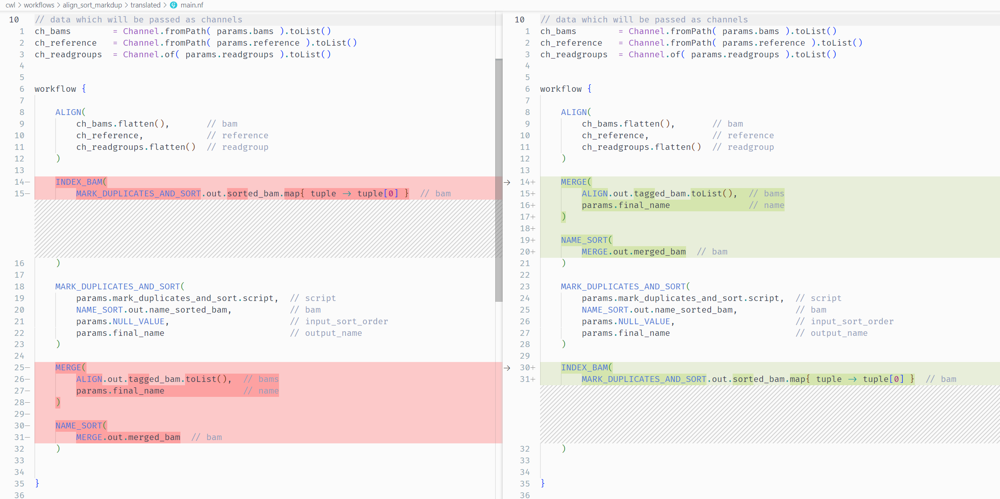
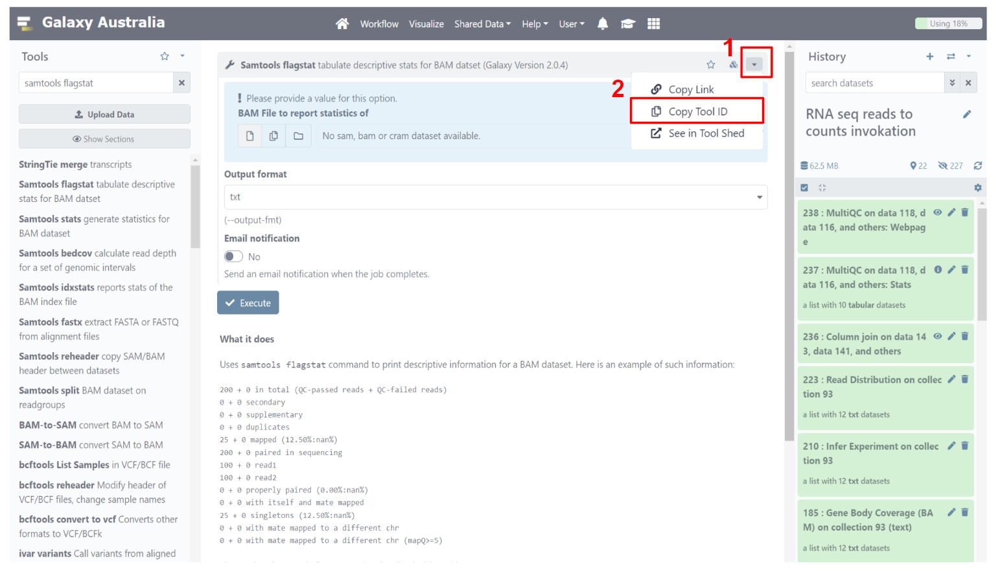
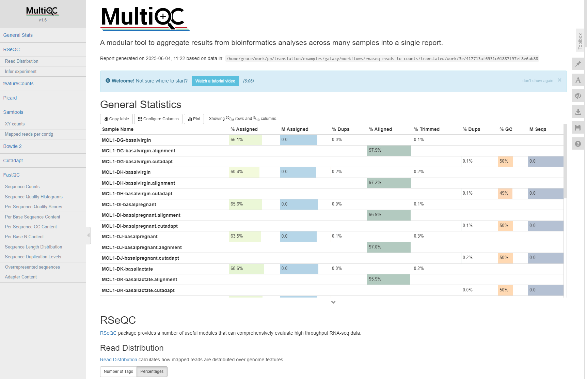
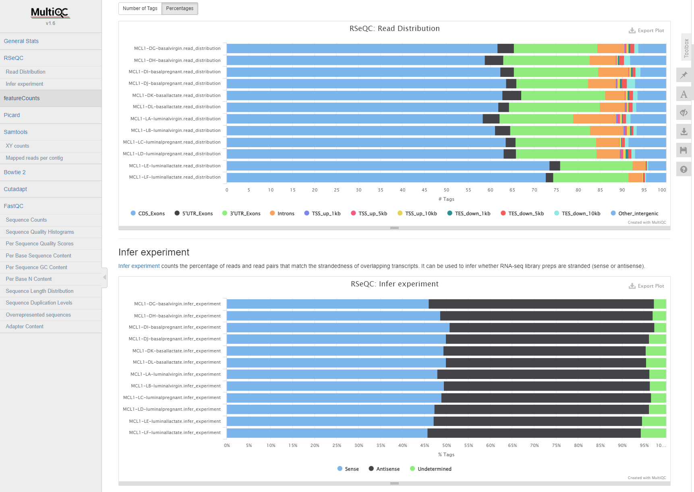

Janis Translate - Migrating CWL / Galaxy to Nextflow¶
Anticipated workshop duration when delivered to a group of participants is 3.5 hours.
For queries relating to this workshop, contact Melbourne Bioinformatics (bioinformatics-training@unimelb.edu.au).
Overview¶
Topic¶
- Genomics
- Transcriptomics
- Proteomics
- Metabolomics
- Statistics and visualisation
- Structural Modelling
- Basic skills
Skill level¶
- Beginner
- Intermediate
- Advanced
The workshop is conducted in a Unix environment.
Command line experience is required.
Prior experience with developing, running, and troubleshooting Nextflow workflows is strongly recommended.
Description¶
Bioinformatics workflows are critical for reproducibly transferring methodologies between research groups and for scaling between computational infrastructures. Research groups currently invest a lot of time and effort in creating and updating workflows; the ability to translate from one workflow language into another can make them easier to share, and maintain with minimal effort. For example, research groups that would like to run an existing Galaxy workflow on HPC, or extend it for their use, might find translating the workflow to Nextflow more suitable for their ongoing use-cases.
Janis is a framework that provides an abstraction layer for describing workflows, and a tool that can translate workflows between existing languages such as CWL, WDL, Galaxy and Nextflow. Janis aims to translate as much as it can, leaving the user to validate the workflow and make small manual adjustments where direct translations are not possible. Originating from the Portable Pipelines Project between Melbourne Bioinformatics, the Peter MacCallum Cancer Centre, and the Walter and Eliza Hall Institute of Medical Research, this tool is now available for everyone to use.
This workshop provides an introduction to Janis and how it can be used to translate Galaxy and CWL based tools and workflows into Nextflow. Using hands-on examples well step you through the process and demonstrate how to optimise, troubleshoot and test the translated workflows.
Section 1 covers migration of CWL tools / workflows to Nextflow.
Section 2 covers migration of Galaxy tool wrappers / workflows to Nextflow.
Learning Objectives¶
By the end of the workshop you should be able to: - Recognise the main aspects and benefits of workflow translation - Use Janis to translated Galaxy / CWL tools & workflows to Nextflow - Configure Nextflow to run translated tools & workflows - Troubleshoot translated Nextflow tools & workflow - Adjust the translated Nextflow tools / workflows & complete missing translations manually
Required Software¶
- IDE of your choosing (we use VS Code in this workshop).
- Refer back to the setup instructions document provided if needed.
Required Data¶
- Sample data will be provided on the compute resource.
Author Information¶
Written by: Grace Hall
Melbourne Bioinformatics, University of Melbourne
Created/Reviewed: May 2023
Contents¶
This workshop has 2 main sections.
We will translate CWL and Galaxy tools and workflows using janis-translate, then will do manual adjustments & run on sample data to check validity.
Section 1: CWL Nextflow
- Section 1.1: Samtools Flagstat Tool
- Section 1.2: GATK HaplotypeCaller Tool
- Section 1.3: Align Sort Markdup Workflow
Section 2: Galaxy Nextflow
- Section 2.1: Samtools Flagstat Tool
- Section 2.2: Limma Voom Tool
- Section 2.3: RNA-Seq Reads to Counts Workflow
Section 1.1: Samtools Flagstat Tool (CWL)¶
Introduction¶
This section demonstrates translation of a basic samtools flagstat tool from CWL to Nextflow using janis translate.
The CWL tool used in this section - samtools_flagstat.cwl - is taken from the McDonnell Genome Institute (MGI) analysis-workflows repository.
This resource stores publically available analysis pipelines for genomics data.
It is a fantastic piece of research software, and the authors thank MGI for their contribution to open-source research software.
The underlying software run by this tool - Samtools Flagstat - displays summary information for an alignment file.
Janis Translate¶
Downloading Janis Translate
In this workshop we will use a singularity container to run janis translate.
Containers are great because they remove the need for package managers, and guarantee that the software can run on any machine.
Singularity is already set up on your VM.
Run the following command to pull the janis image:
singularity pull janis.sif docker://pppjanistranslate/janis-translate:0.13.0
Check your image by running the following command:
singularity exec ~/janis.sif janis translate
If the image is working, you should see the janis translate helptext.
Downloading Training Data and Tool / Workflow Source Files
For this workshop we will fetch all needed data from zenodo using wget.
This archive contains source CWL / Galaxy files, sample data, and finished translations as a reference.
Run the following commands to download & uncompress the zenodo archive:
wget https://zenodo.org/record/8052348/files/data.tar.gz
tar -xvf data.tar.gz
Inside the data folder we have the following structure:
data
final # finalised translations for your reference
cwl
galaxy
sample_data # sample data to test nextflow processes / workflows
cwl
galaxy
source # CWL / Galaxy files we will translate
cwl
galaxy
The test data provided in data/sample_data is also available at /cvmfs/data.biocommons.aarnet.edu.au/training_materials/MelbBio_training/Janis_0723/sample_data/
Running Janis Translate¶
To translate a tool / workflow, we use janis translate.
janis translate --from <src> --to <dest> <filepath>
The --from argument specifies the workflow language of the source file(s), and --to specifies the destination we want to translate to.
The <filepath> argument is the source file we will translate.
In this section we are translating a single CWL CommandLineTool, so we will only produce a single nextflow file.
In this section, we want to translate CWL -> Nextflow, and our source CWL file is in the data folder we just downloaded from zenodo.
It’s path is data/source/cwl/samtools_flagstat.cwl.
Run the following command:
singularity exec ~/janis.sif janis translate --from cwl --to nextflow data/source/cwl/samtools_flagstat.cwl
You will see a folder called translated/ appear, and a nextflow process called samtools_flagstat.nf will be present inside.
Manual Adjustments¶
The translated/samtools_flagstat.nf file should be similar to the following:
nextflow.enable.dsl = 2
process SAMTOOLS_FLAGSTAT {
container "quay.io/biocontainers/samtools:1.11--h6270b1f_0"
input:
path bam
output:
path "${bam[0]}.flagstat", emit: flagstats
script:
def bam = bam[0]
"""
/usr/local/bin/samtools flagstat \
${bam} \
> ${bam}.flagstat \
"""
}
We can see that this nextflow process has a single input, a single output, and calls samtools flagstat on the input bam.
We can also see that a container image is available for this tool. In the next section we will run this process using some sample data and the specified container.
This translation is correct for the samtools_flagstat.cwl file and needs no adjusting.
Have a look at the source CWL file to see how they match up.
Note:
def bam = bam[0]in the script block is used to handle datatypes with secondary files.
Thebaminput is an indexed bam type, so requires a.baifile to also be present in the working directory alongside the.bamfile.
For this reason thebaminput is supplied as an Array with 2 files - the.bamand the.bai.
Here thedef bam = bam[0]is used so thatbamrefers to the.bamfile in that Array.
Running Samtools Flagstat as a Workflow¶
Collecting Process Outputs
Let’s add a publishDir directive to our translated process so that we can capture the outputs of this process.
process SAMTOOLS_FLAGSTAT {
container "quay.io/biocontainers/samtools:1.11--h6270b1f_0"
publishDir "./outputs" <-
....
}
Nextflow allows us to capture the outputs created by a process using the publishDir directive seen above.
Setting up nextflow.config
To run this process, we will set up a nextflow.config file and add some lines to the top of our process definition to turn it into a workflow.
Create a new file called nextflow.config in the translated/ folder alongside samtools_flagstat.nf.
For this workshop, we are using sample data located at /home2/training/data/sample_data/.
Copy and paste the following code into your nextflow.config file:
nextflow.enable.dsl = 2
singularity.enabled = true
singularity.cacheDir = "$HOME/.singularity/cache"
params {
bam = [
'/home2/training/data/sample_data/cwl/2895499223_sorted.bam',
'/home2/training/data/sample_data/cwl/2895499223_sorted.bam.bai',
]
}
This tells nextflow how to run, and sets up an input parameter for our indexed bam input.
The bam parameter is a list which provides paths to the .bam and .bai sample data we will use to test the nextflow translation. From here, we can refer to the indexed bam input as params.bam in other files.
NOTE
nextflow.enable.dsl = 2ensures that we are using the dsl2 nextflow syntax which is the current standard.
singularity.enabled = truetells nextflow to run processes using singularity. Oursamtools_flagstat.nfhas a directive with the formcontainer "quay.io/biocontainers/samtools:1.11--h6270b1f_0"provided, so it will use the specified image when running this process.
singularity.cacheDir = "$HOME/.singularity/cache"tells nextflow where singularity images are stored.
Nextflow will handle the singularity image download and stored it in the cache specified above. If you’d like to use an already available container, you can modifysamtools_flagstat.nfcontainer directive tocontainer "/cvmfs/singularity.galaxyproject.org/all/samtools:1.11--h6270b1f_0".
The test data used above is also available at/cvmfs, and can be accessed as follow:bam=['/cvmfs/data.biocommons.aarnet.edu.au/training_materials/MelbBio_training/Janis_0723/sample_data/cwl/2895499223_sorted.bam', '/cvmfs/data.biocommons.aarnet.edu.au/training_materials/MelbBio_training/Janis_0723/sample_data/cwl/2895499223_sorted.bam.bai'].
Creating Workflow & Passing Data
Now that we have the nextflow.config file set up, we will add a few lines to samtools_flagstat.nf to turn it into a workflow.
Copy and paste the following lines at the top of samtools_flagstat.nf:
ch_bam = Channel.fromPath( params.bam ).toList()
workflow {
SAMTOOLS_FLAGSTAT(ch_bam)
}
The first line creates a nextflow Channel for our bam input and ensures it is a list.
The Channel.toList() part collects our files into a list, as both the .bam and .bai files must be passed together.
The params.bam global variable we set up previously is used to supply the paths to our sample data.
The new workflow {} section declares the main workflow entry point.
When we run this file, nextflow will look for this section and run the workflow contained within.
In our case, the workflow only contains a single task, which runs the SAMTOOLS_FLAGSTAT process defined below the workflow section. The single SAMTOOLS_FLAGSTAT input is being passed data from our ch_bam channel we declared at the top of the file.
Running Our Workflow
Ensure you are in the translated/ working directory, where nextflow.config and samtools_flagstat.nf reside.
cd translated
To run the workflow using our sample data, we can now write the following command:
nextflow run samtools_flagstat.nf
Nextflow will automatically check if there is a nextflow.config file in the working directory, and if so will use that to configure itself. Our inputs are supplied in nextflow.config alongside the dsl2 & singularity config, so it should run without issue.
Once completed, we can check the outputs/ folder to view our results.
If everything went well, there should be a file called 2895499223_sorted.bam.flagstat with the following contents:
2495 + 0 in total (QC-passed reads + QC-failed reads)
0 + 0 secondary
1 + 0 supplementary
0 + 0 duplicates
2480 + 0 mapped (99.40% : N/A)
2494 + 0 paired in sequencing
1247 + 0 read1
1247 + 0 read2
2460 + 0 properly paired (98.64% : N/A)
2464 + 0 with itself and mate mapped
15 + 0 singletons (0.60% : N/A)
0 + 0 with mate mapped to a different chr
0 + 0 with mate mapped to a different chr (mapQ>=5)
Conclusion¶
In section 1.1 we explored how to translate a simple CWL tool to a Nextflow process.
If needed, you can check the final/cwl/samtools_flagstat folder in the zenodo data/ directory.
This contains the files we created in this section for your reference.
We will build on our knowledge in section 1.2 by translating a more complex CWL CommandLineTool definition: GATK HaplotypeCaller.
Section 1.2: GATK HaplotypeCaller Tool (CWL)¶
Introduction¶
Now that we have translated a simple CWL CommandLineTool, let’s translate a more real-world CommandLineTool.
This section demonstrates translation of a gatk HaplotypeCaller tool from CWL to Nextflow using janis translate.
The source CWL file used in this section is taken from the McDonnell Genome Institute (MGI) analysis-workflows repository.
This repository stores publically available analysis pipelines for genomics data.
It is a fantastic piece of research software, and the authors thank MGI for their contribution to open-source research software.
The software tool encapsulated by the source CWL - gatk_haplotype_caller.cwl - displays summary information for an alignment file.
Janis Translate¶
As in section 1.1, we will use janis-translate to translate our CWL CommandLineTool to a Nextflow process.
First, let’s make sure we’re back in the main training directory
cd /home2/training
This time, since we already have a translated/ folder, we will supply the -o argument to janis-translate to specify an output directory.
singularity exec ~/janis.sif janis translate -o haplotype_caller --from cwl --to nextflow data/source/cwl/gatk_haplotype_caller.cwl
You will see a folder called haplotype_caller/ appear, and a nextflow process called gatk_haplotype_caller.nf will be present inside.
Manual Adjustments¶
The haplotype_caller/gatk_haplotype_caller.nf file should be similar to the following:
nextflow.enable.dsl = 2
process GATK_HAPLOTYPE_CALLER {
container "broadinstitute/gatk:4.1.8.1"
input:
path bam
path reference
path dbsnp_vcf, stageAs: 'dbsnp_vcf/*'
val intervals
val gvcf_gq_bands
val emit_reference_confidence
val contamination_fraction
val max_alternate_alleles
val ploidy
val read_filter
output:
tuple path("output.g.vcf.gz"), path("*.tbi"), emit: gvcf
script:
def bam = bam[0]
def dbsnp_vcf = dbsnp_vcf[0] != null ? "--dbsnp ${dbsnp_vcf[0]}" : ""
def reference = reference[0]
def gvcf_gq_bands_joined = gvcf_gq_bands != params.NULL_VALUE ? "-GQB " + gvcf_gq_bands.join(' ') : ""
def intervals_joined = intervals.join(' ')
def contamination_fraction = contamination_fraction != params.NULL_VALUE ? "-contamination ${contamination_fraction}" : ""
def max_alternate_alleles = max_alternate_alleles != params.NULL_VALUE ? "--max_alternate_alleles ${max_alternate_alleles}" : ""
def ploidy = ploidy != params.NULL_VALUE ? "-ploidy ${ploidy}" : ""
def read_filter = read_filter != params.NULL_VALUE ? "--read_filter ${read_filter}" : ""
"""
/gatk/gatk --java-options -Xmx16g HaplotypeCaller \
-R ${reference} \
-I ${bam} \
-ERC ${emit_reference_confidence} \
${gvcf_gq_bands_joined} \
-L ${intervals_joined} \
${dbsnp_vcf} \
${contamination_fraction} \
${max_alternate_alleles} \
${ploidy} \
${read_filter} \
-O "output.g.vcf.gz"
"""
}
We can see that this nextflow process has a multiple inputs, single output, and calls gatk HaplotypeCaller using the input data we supply to the process.
Notes on translation:
(1)def bam = bam[0]
This pattern is used in the script block to handle datatypes with secondary files.
Thebaminput is an indexed bam type, so requires a.baifile to also be present in the working directory.
To facilitate this, we supply thebaminput as a tuple of 2 files:
[filename.bam, filename.bam.bai].
def bam = bam[0]is used so when we reference${bam}in the script body, we are refering to the.bamfile in that list.
(2)def ploidy = ploidy != params.NULL_VALUE ? "-ploidy ${ploidy}" : ""
This is how we handle optional val inputs in nextflow.
Nextflow doesn’t like null values to be passed to process inputs, so we use 2 different tricks to make optional inputs possible.
Forvalinputs we set up aNULL_VALUEparam innextflow.configwhich we use as a placeholder.
Forpathinputs (ie files and directories) we set up a null file rather than passing null directly.
This ensures that the file is staged correctly in the working directory when an actual filepath is provided.
The format above is a ternary operator of the formdef myvar = cond_check ? cond_true : cond_false.
We are redefining theploidystring variable so that it will be correctly formatted when used in the script block.
If we supply an actual value, it will take the form"-ploidy ${ploidy}".
If we supply the placeholderparams.NULL_VALUEvalue, it will be a blank string"".
(3)def intervals_joined = intervals.join(' ')
Templates ourintervalslist of strings to a single string.
Each item is joined by a space: eg["hello", "there"]->"hello there".
(4)def dbsnp_vcf = dbsnp_vcf[0] != null ? "--dbsnp ${dbsnp_vcf[0]}" : ""
Same as (2) except uses a different check for null value, and selects the primary.vcf.gzfile.
As thepath dbsnp_vcfinput is optional and consists of a.vcf.gzand.vcf.gz.tbifile,dbsnp_vcf[0] != nullchecks if the primary.vcf.gzfile is present.
If true, it templates a string we can use in the script body to provide the required argument:--dbsnp ${dbsnp_vcf[0]}.
If false, it templates an empty string.
This ensures that when we use${dbsnp_vcf}in the script body, it will be formatted correctly for either case.
This translation is correct for the gatk_haplotype_caller.cwl file and needs no adjusting.
Have a look at the source CWL file to see how they match up.
Running GATK HaplotypeCaller as a Workflow¶
Collecting Process Outputs
Let’s add a publishDir directive to our translated process so that we can capture the outputs of this process.
process GATK_HAPLOTYPE_CALLER {
container "broadinstitute/gatk:4.1.8.1"
publishDir "./outputs"
...
}
Nextflow allows us to capture the outputs created by a process using the publishDir directive seen above.
NOTE
Ourgatk_haplotype_caller.nfhas a container directive with the formcontainer "broadinstitute/gatk:4.1.8.1"provided, so Nextflow will handle this singularity image download and will use the specified image when running this process (provided thatsingularity.enabledis set totruein the nextflow config).
If you’d like to use an already available container, you can modify this container directive tocontainer "/cvmfs/singularity.galaxyproject.org/all/gatk4:4.1.8.1--py38_0".
Setting up nextflow.config
To run this process, we will set up a nextflow.config file and add some lines to the top of our process definition to turn it into a workflow.
Create a new file called nextflow.config in the haplotype_caller/ folder alongside gatk_haplotype_caller.nf.
Copy and paste the following code into your nextflow.config file:
nextflow.enable.dsl = 2
singularity.enabled = true
singularity.cacheDir = "$HOME/.singularity/cache"
params {
NULL_VALUE = 'NULL'
bam = [
'/home2/training/data/sample_data/cwl/2895499223_sorted.bam',
'/home2/training/data/sample_data/cwl/2895499223_sorted.bam.bai',
]
dbsnp = [
'/home2/training/data/sample_data/cwl/chr17_test_dbsnp.vcf.gz',
'/home2/training/data/sample_data/cwl/chr17_test_dbsnp.vcf.gz.tbi',
]
reference = [
'/home2/training/data/sample_data/cwl/chr17_test.fa',
'/home2/training/data/sample_data/cwl/chr17_test.dict',
'/home2/training/data/sample_data/cwl/chr17_test.fa.fai',
]
gvcf_gq_bands = NULL_VALUE
intervals = ["chr17"]
emit_reference_confidence = 'GVCF'
contamination_fraction = NULL_VALUE
max_alternate_alleles = NULL_VALUE
ploidy = NULL_VALUE
read_filter = NULL_VALUE
}
file inputs
The bam parameter is a list which provides paths to the .bam and .bai sample data we will use to test the nextflow translation. From here, we can refer to the indexed bam input as params.bam in other files. The dbsnp and reference params follow this same pattern.
non-file inputs
We also set up a NULL_VALUE param which we use as a placeholder for a null value.
In this case we are providing null values for the gvcf_gq_bands, contamination_fraction, max_alternate_alleles, ploidy and read_filter inputs as they are all optional.
Creating Workflow & Passing Data
Now that we have the nextflow.config file set up, we will add a few lines to gatk_haplotype_caller.nf to turn it into a workflow.
Copy and paste the following lines at the top of gatk_haplotype_caller.nf:
ch_bam = Channel.fromPath( params.bam ).toList()
ch_dbsnp = Channel.fromPath( params.dbsnp ).toList()
ch_reference = Channel.fromPath( params.reference ).toList()
workflow {
GATK_HAPLOTYPE_CALLER(
ch_bam,
ch_reference,
ch_dbsnp,
params.intervals,
params.gvcf_gq_bands,
params.emit_reference_confidence,
params.contamination_fraction,
params.max_alternate_alleles,
params.ploidy,
params.read_filter,
)
}
The first 3 lines create nextflow Channels for our bam, dbsnp, and reference inputs and ensures they are lists.
The Channel.toList() aspect collects our files into a list, as the primary & secondary files for these datatypes must be passed together as a tuple.
The params.bam, params.dbsnp and params.reference global variables we set up previously are used to supply the paths to our sample data for these channels.
The new workflow {} section declares the main workflow entry point.
When we run this file, nextflow will look for this section and run the workflow contained within.
In our case, the workflow only contains a single task, which runs the GATK_HAPLOTYPE_CALLER process defined below the workflow section. We call GATK_HAPLOTYPE_CALLER by feeding inputs in the correct order, using the channels we declared at the top of the file, and variables we set up in the global params object.
Running Our Workflow
Ensure you are in the haplotype_caller/ working directory, where nextflow.config and gatk_haplotype_caller.nf reside.
cd haplotype_caller
To run the workflow using our sample data, we can now write the following command:
nextflow run gatk_haplotype_caller.nf
Nextflow will automatically check if there is a nextflow.config file in the working directory, and if so will use that to configure itself. Our inputs are supplied in nextflow.config alongside the dsl2 & singularity config, so it should run without issue.
Once completed, we can check the outputs/ folder to view our results.
If everything went well, the outputs/ folder should contain 2 files:
output.g.vcf.gzoutput.g.vcf.gz.tbi
Conclusion¶
In this section we explored how to translate the gatk_haplotype_caller CWL CommandLineTool to a Nextflow process.
This is a more real-world situation, where the CommandLineTool has multiple inputs, secondary files, and optionality.
If needed, you can check the final/cwl/gatk_haplotype_caller/ folder inside our data/ directory which contains the files we created in this tutorial as reference.
Now that we have translated two CWL CommandLineTools, we will translate a full CWL Workflow into Nextflow.
Section 1.3: Align Sort Markdup Workflow (CWL)¶
Introduction¶
This section demonstrates translation of a CWL Workflow to Nextflow using janis translate.
The workflow used in this tutorial is taken from the McDonnell Genome Institute (MGI) analysis-workflows repository.
This resource stores publically available analysis pipelines for genomics data.
It is a fantastic piece of research software, and the authors thank MGI for their contribution to open-source research software.
The workflow using in this tutorial - align_sort_markdup.cwl - accepts multiple unaligned readsets as input and produces a single polished alignment bam file.
Main Inputs
- Unaligned reads stored across multiple BAM files
- Reference genome index
Main Outputs
- Single BAM file storing alignment for all readsets
Steps
- Read alignment (run in parallel across all readsets) -
bwa mem - Merging alignment BAM files to single file -
samtools merge - Sorting merged BAM by coordinate -
sambamba sort - Tagging duplicate reads in alignment -
picard MarkDuplicates - Indexing final BAM -
samtools index
Janis Translate¶
Previously we were translating single CWL CommandLineTools, but in this section we are translating a full CWL workflow.
To translate a workflow, we supply the main CWL workflow file to janis translate.
In addition to the main CWL Workflow, all Subworkflows / CommandLineTools will be detected & translated.
First, let’s make sure we’re back in the main training directory
cd /home2/training
In this section, we are translating CWL -> Nextflow, and our source CWL file is located at data/source/cwl/align_sort_markdup/subworkflows/align_sort_markdup.cwl relative to this document.
We will add the -o align_sort_markdup argument to specify this as the output directory.
To translate, run the following command:
singularity exec ~/janis.sif janis translate -o align_sort_markdup --from cwl --to nextflow data/source/cwl/align_sort_markdup/subworkflows/align_sort_markdup.cwl
Translation Output¶
The output translation will contain multiple files and directories.
You will see a folder called align_sort_markdup/ appear - inside this folder, we should see the following structure:
align_sort_markdup
main.nf # main workflow (align_sort_markdup)
modules # folder containing nextflow processes
align_and_tag.nf
index_bam.nf
mark_duplicates_and_sort.nf
merge_bams_samtools.nf
name_sort.nf
nextflow.config # config file to supply input information
subworkflows # folder containing nextflow subworkflows
align.nf
templates # folder containing any scripts used by processes
markduplicates_helper.sh
Now that we have performed translation using janis translate, we need to check the translated workflow for correctness.
From here, we will do a test-run of the workflow using sample data, and make manual adjustments to the translated workflow where needed.
Running the Translated Workflow¶
Inspect main.nf
The main workflow translation appears as main.nf in the align_sort_markdup/ folder.
This filename is just a convention, and we use it to provide clarity about the main entry point of the workflow.
In our case main.nf is equivalent to the main CWL Workflow file we translated: align_sort_markdup.cwl.
NOTE:
Before continuing, feel free to have a look at the other nextflow files which have been generated during translation:
Each CWL Subworkflow appears as a nextflowworkflowin thesubworkflows/directory.
Each CWL CommandLineTool appears as a nextflowprocessin themodules/directory.
In main.nf we see the nextflow workflows / processes called by the main workflow:
include { ALIGN } from './subworkflows/align'
include { INDEX_BAM } from './modules/index_bam'
include { MARK_DUPLICATES_AND_SORT } from './modules/mark_duplicates_and_sort'
include { MERGE_BAMS_SAMTOOLS as MERGE } from './modules/merge_bams_samtools'
include { NAME_SORT } from './modules/name_sort'
We also see that some nextflow Channels and a single variable have been set up.
These are used to supply data according to nextflow’s adoption of the dataflow programming model.
// data which will be passed as channels
ch_bams = Channel.fromPath( params.bams ).toList()
ch_readgroups = Channel.of( params.readgroups ).toList()
// data which will be passed as variables
reference = params.reference.collect{ file(it) }
Focusing on the channel declarations, we want to note a few things:
-
ch_bamsis analygous to the ‘bams’ input inalign_sort_markdup.cwl.
It declares a queue channel which expects the data supplied viaparams.bamsarepathtypes.
It then groups the bams together as a sole emission using.toList().
We will need to set upparams.bamsto supply this data. -
ch_readgroupsis analygous to the ‘readgroups’ input inalign_sort_markdup.cwl.
It is the same asch_bams, except it requiresvaltypes rather thanpathtypes.
We will need to set upparams.readgroupsto supply this data.
We also see a new variable called reference being created.
This reference var is analygous to the ‘reference’ input in align_sort_markdup.cwl.
It collects the ‘reference’ primary & secondary files together in a list.
We will need to set up params.reference to supply this data.
Note: Why does
referenceappear as a variable, rather than aChannel?
In Nextflow, we find it is best to create Channels for data that moves through the pipeline.
Thech_bamschannel is created because we want to consume / transform the input bams during the pipeline.
On the other hand, thereferencegenome variable is not something we really want to consume or transform.
It’s more like static helper data which can be used by processes, but it doesn’t move through our pipeline, and definitely shouldn’t be consumed or transformed in any way.
Note:
.toList()
Nextflow queue channels work differently to lists.
Instead of supplying all items together, queue channels emit each item separately.
This results in a separate task being spawned for each item in the queue when the channel is used.
As the CWL workflow input specifies thatbamsis a list, we use.toList()to group all items as a sole emission.
This mimics a CWL array which is the datatype of thebamsinputs.
As it turns out, the CWL workflow ends up running thealignstep in parallel across thebams&readgroupsinputs.
Parallelisation in nextflow happens by default.
To facilitate this, the.flatten()method is called onch_bamsandch_readgroupswhen used in theALIGNtask.
This emits items inch_bamsandch_readgroupsindividually, spawning a newALIGNtask for each pair.
We’re kinda doing redundant work by calling.toList(), then.flatten()whench_bamsandch_readgroupsare used.
janis translateisn’t smart enough yet to detect this yet, but may do so in future.
Continuing down main.nf, we see the main workflow {} has 5 tasks.
Each task has been supplied values according to the source workflow. Comments display the name of the process/workflow input which is being fed a particular value.
workflow {
ALIGN(
ch_bams.flatten(), // bam
ch_reference, // reference
ch_readgroups.flatten() // readgroup
)
INDEX_BAM(
MARK_DUPLICATES_AND_SORT.out.sorted_bam.map{ tuple -> tuple[0] } // bam
)
MARK_DUPLICATES_AND_SORT(
params.mark_duplicates_and_sort.script, // script
NAME_SORT.out.name_sorted_bam, // bam
params.NULL_VALUE, // input_sort_order
params.final_name // output_name
)
MERGE(
ALIGN.out.tagged_bam.toList(), // bams
params.final_name // name
)
NAME_SORT(
MERGE.out.merged_bam // bam
)
}
Before main.nf can be run, we will need to supply values for the params variables.
This is done in nextflow.config.
Inspect nextflow.config
To test the translated workflow, we will first set up workflow inputs in nextflow.config.
Before running a workflow, nextflow will attempt to open nextflow.config and read in config information and global param variables from this file.
We use this file to tell nextflow how to run and to supply workflow inputs.
Inside the align_sort_markdup/ folder you will see that nextflow.config is already provided.
Janis translate creates this file to provide clarity about the necessary workflow inputs, and to set some other config variables.
Open nextflow.config and have a look at the contents. It should look similar to the following:
nextflow.enable.dsl = 2
singularity.enabled = true
singularity.cacheDir = "$HOME/.singularity/cache"
params {
// Placeholder for null values.
// Do not alter unless you know what you are doing.
NULL_VALUE = 'NULL'
// WORKFLOW OUTPUT DIRECTORY
outdir = './outputs'
// INPUTS (MANDATORY)
bams = [] // (MANDATORY array) eg. [file1, ...]
reference = [] // (MANDATORY fastawithindexes) eg. [fasta, amb, ann, bwt, dict, fai, pac, sa]
readgroups = NULL_VALUE // (MANDATORY array) eg. [string1, ...]
// INPUTS (OPTIONAL)
final_name = "final.bam"
// PROCESS: ALIGN_AND_TAG
align_and_tag.cpus = 8
align_and_tag.memory = 20000
// PROCESS: INDEX_BAM
index_bam.memory = 4000
// PROCESS: MARK_DUPLICATES_AND_SORT
mark_duplicates_and_sort.script = "/home2/training/align_sort_markdup/templates/markduplicates_helper.sh"
mark_duplicates_and_sort.cpus = 8
mark_duplicates_and_sort.memory = 40000
// PROCESS: MERGE_BAMS_SAMTOOLS
merge_bams_samtools.cpus = 4
merge_bams_samtools.memory = 8000
// PROCESS: NAME_SORT
name_sort.cpus = 8
name_sort.memory = 26000
}
NOTE:
NULL_VALUE = 'NULL'
Nextflow doesn’t likenullvalues to be passed to process inputs.
This is a challenge for translation as other languages allowoptionalinputs.
To get around this, Janis Translate sets theparams.NULL_VALUEvariable as anullplaceholder forvaltype inputs.
You will see this being used in nextflow processes to do optionality checking.
The auto-generated nextflow.config splits up workflow inputs using some headings.
// INPUTS (MANDATORY)
// INPUTS (OPTIONAL)
// PROCESS: ALIGN_AND_TAG
May be mandatory or optional.
Setting up Workflow Inputs
Janis Translate will enter values for workflow inputs where possible. Others need to be manually supplied as they are specific to the input data you wish to use.
In our case, we need to supply values for those under the // INPUTS (MANDATORY) heading.
Specifically, we need to provide sample data for the bams, reference, and readgroups inputs.
Additionally, the cpu and memory params need to be changed.
The source CWL Workflow has compute requirements set greater than what is available on your VM.
Copy and paste the following text, to override the current nextflow.config file:
nextflow.enable.dsl = 2
singularity.enabled = true
singularity.cacheDir = "$HOME/.singularity/cache"
params {
// Placeholder for null values.
// Do not alter unless you know what you are doing.
NULL_VALUE = 'NULL'
// WORKFLOW OUTPUT DIRECTORY
outdir = './outputs'
// INPUTS (MANDATORY)
bams = [
"/home2/training/data/sample_data/cwl/2895499223.bam",
"/home2/training/data/sample_data/cwl/2895499237.bam",
]
reference = [
"/home2/training/data/sample_data/cwl/chr17_test.fa",
"/home2/training/data/sample_data/cwl/chr17_test.fa.amb",
"/home2/training/data/sample_data/cwl/chr17_test.fa.ann",
"/home2/training/data/sample_data/cwl/chr17_test.fa.bwt",
"/home2/training/data/sample_data/cwl/chr17_test.fa.fai",
"/home2/training/data/sample_data/cwl/chr17_test.dict",
"/home2/training/data/sample_data/cwl/chr17_test.fa.pac",
"/home2/training/data/sample_data/cwl/chr17_test.fa.sa",
]
readgroups = [
'@RG\tID:2895499223\tPU:H7HY2CCXX.3.ATCACGGT\tSM:H_NJ-HCC1395-HCC1395\tLB:H_NJ-HCC1395-HCC1395-lg24-lib1\tPL:Illumina\tCN:WUGSC',
'@RG\tID:2895499237\tPU:H7HY2CCXX.4.ATCACGGT\tSM:H_NJ-HCC1395-HCC1395\tLB:H_NJ-HCC1395-HCC1395-lg24-lib1\tPL:Illumina\tCN:WUGSC'
]
// INPUTS (OPTIONAL)
final_name = "final.bam"
// PROCESS: ALIGN_AND_TAG
align_and_tag.cpus = 4
align_and_tag.memory = 10000
// PROCESS: INDEX_BAM
index_bam.memory = 10000
// PROCESS: MARK_DUPLICATES_AND_SORT
mark_duplicates_and_sort.script = "/home2/training/align_sort_markdup/templates/markduplicates_helper.sh"
mark_duplicates_and_sort.cpus = 4
mark_duplicates_and_sort.memory = 10000
// PROCESS: MERGE_BAMS_SAMTOOLS
merge_bams_samtools.cpus = 4
merge_bams_samtools.memory = 10000
// PROCESS: NAME_SORT
name_sort.cpus = 4
name_sort.memory = 10000
}
Run the Workflow
Ensure you are in the align_sort_markdup/ working directory, where nextflow.config and main.nf reside.
If not, use the following to change directory.
cd align_sort_markdup
To run the workflow using our sample data, we can now write the following command:
nextflow run main.nf
While the workflow runs, you will encounter this error:
Access to 'MARK_DUPLICATES_AND_SORT.out' is undefined since the process 'MARK_DUPLICATES_AND_SORT' has not been invoked before accessing the output attribute
This is somewhat expected. Janis translate doesn’t produce perfect translations - just the best it can do.
This is the first of 3 errors we will encounter and fix while making this workflow runnable.
Manual Adjustments¶
Translations performed by janis translate often require manual changes due to the difficulty of translating between languages with non-overlapping feature sets.
In this section we will fix 3 errors to bring the translation to a finished state.
NOTE
If having trouble during this section, the finished workflow is available in thedata/final/cwl/align_sort_markdupfolder for reference.
Error 1: Process Order¶
Error message
The first issue we need to address is caused by tasks being in the wrong order.
Access to 'MARK_DUPLICATES_AND_SORT.out' is undefined since the process 'MARK_DUPLICATES_AND_SORT' has not been invoked before accessing the output attribute
This nextflow error message is quite informative, and tells us that a task is trying to access the output of MARK_DUPLICATES_AND_SORT before it has run.
The offending task is INDEX_BAM as it uses MARK_DUPLICATES_AND_SORT.out.sorted_bam.map{ tuple -> tuple[0] } as an input value to the process.
Troubleshooting
It seems that a nextflow process is trying to run before a prior process has finished.
This is most likely due to the processes in our main.nf workflow being in the wrong order.
Let’s look at the source CWL align_sort_markdup.cwl workflow to view the correct order of steps:
steps:
align:
...
merge:
...
name_sort:
...
mark_duplicates_and_sort:
...
index_bam:
...
This differs from our translated main.nf which has the following order:
workflow {
ALIGN(
...
)
INDEX_BAM(
...
)
MARK_DUPLICATES_AND_SORT(
...
)
MERGE(
...
)
NAME_SORT(
...
)
}
Solution
We will need to rearrange the process calls in main.nf so they mirror the order seen in the source CWL.
Rerranging process calls
Cut-and-paste the process calls to be in the correct order in the main workflow.
Correct Order
- ALIGN
- MERGE
- NAME_SORT
- MARK_DUPLICATES_AND_SORT
- INDEX_BAM
Show Workflow
workflow {
ALIGN(
ch_bams.flatten(), // ch_bam
reference, // ch_reference
ch_readgroups.flatten() // ch_readgroup
)
MERGE(
ALIGN.out.tagged_bam.toList(), // bams
params.final_name // name
)
NAME_SORT(
MERGE.out.merged_bam // bam
)
MARK_DUPLICATES_AND_SORT(
params.mark_duplicates_and_sort.script, // script
NAME_SORT.out.name_sorted_bam, // bam
params.NULL_VALUE, // input_sort_order
params.final_name // output_name
)
INDEX_BAM(
MARK_DUPLICATES_AND_SORT.out.sorted_bam.map{ tuple -> tuple[0] } // bam
)
}
After you are done, rerun the workflow by using the same command as before.
nextflow run main.nf
Error 2: Unquoted Strings¶
Error message
The second error is due to the readgroup input of the ALIGN_AND_TAG process being used without enclosing quotes.
Caused by:
Process `ALIGN:ALIGN_AND_TAG (1)` terminated with an error exit status (1)
Command executed:
/bin/bash /usr/bin/alignment_helper.sh 2895499223.bam @RG INCLID:2895499223RY_PU:H7HY2CCXX.3.ATCACGGTITY=ISM:H_NJ-HCC1395-HCC1395ILB:H_NJ-HCC1395-HCC1395-lg24-lib1LEVEL=5PL:IlluminaSCN:WUGSC chr17_test.fa 8 > refAlign.bam
The issue can be seen in the command above.
We see /bin/bash /usr/bin/alignment_helper.sh 2895499223.bam which is expected.
This is then followed by what looks like 2 string arguments: @RG and INCLID....
This is causing the problem.
Troubleshooting
The Command executed section in nextflow error messages is particularly useful.
This message is printed to the shell, but can also be seen by navigating to the process working directory & viewing .command.sh.
Let’s look at the nextflow ALIGN_AND_TAG process so we can match up which process input is causing the error.
Indiviual arguments have been marked with their (position) to aid our investigation.
process ALIGN_AND_TAG {
container "mgibio/alignment_helper-cwl:1.0.0"
publishDir "${params.outdir}/align_and_tag"
cpus "${params.align_and_tag.cpus}"
memory "${params.align_and_tag.memory}"
input:
path reference
path bam
val readgroup
output:
path "refAlign.bam", emit: aligned_bam
script:
def reference = reference[0]
"""
(1) /bin/bash (2) /usr/bin/alignment_helper.sh \
(3) ${bam} \
(4) ${readgroup} \
(5) ${reference} \
(6) 8 \
(7) > (8) refAlign.bam
"""
}
Here is the command executed with the same numbering:
(1) /bin/bash (2) /usr/bin/alignment_helper.sh (3) 2895499223.bam (4) @RG (5) ID:2895499223 PU:H7HY2CCXX.3.ATCACGGT SM:H_NJ-HCC1395-HCC1395 LB:H_NJ-HCC1395-HCC1395-lg24-lib1 PL:Illumina CN:WUGSC (6) chr17_test.fa (7) 8 (8) > (9) refAlign.bam
Matching up the two, we can see that arguments (1-3) match their expected values.
Argument (4) starts out right, as we expect the readgroup input.
Looking in the script: section of the nextflow process, we expect the ${reference} input to appear as argument (5), but in the actual command it appears as argument (6) chr17_test.fa.
The issue seems to be that the readgroup input has been split into 2 strings, instead of 1 single string.
By tracing back through the workflow, we can track that params.readgroups supplies the value for readgroup in this nextflow process:
modules/align_and_tag.nf: readgroup
subworkflows/align.nf: ch_readgroup
main.nf: ch_readgroups.flatten()
main.nf: ch_readgroups = Channel.of( params.readgroups ).toList()
Looking at nextflow.config we see that this particular readgroup value is supplied as follows:
@RG\tID:2895499223\tPU:H7HY2CCXX.3.ATCACGGT\tSM:H_NJ-HCC1395-HCC1395\tLB:H_NJ-HCC1395-HCC1395-lg24-lib1\tPL:Illumina\tCN:WUGSC
The @RG being split from the rest of the readgroup value, and the text which follows is incorrect in the command.
The issue here is that this value in params.readgroups contains spaces and tabs (\t).
When used in a nextflow process, string arugments should be enclosed using "".
Solution
Back in the modules/align_and_tag.nf file, let’s properly enclose the readgroup input in quotes.
align_and_tag.nf
In the ALIGN_AND_TAG process script enclose the ${readgroup} reference in quotes.
Show Change
script:
def reference = reference[0]
"""
/bin/bash /usr/bin/alignment_helper.sh \
${bam} \
"${readgroup}" \ <- quotes added
${reference} \
8 \
> refAlign.bam
"""
After you are have made the change, re-run the workflow by using the same command as before:
nextflow run main.nf
Error 3: Filename Clashes¶
Error Message
The final error is flagged by the nextflow workflow engine.
Upon re-running the workflow, you will encounter the following message:
Process `MERGE` input file name collision -- There are multiple input files for each of the following file names: refAlign.bam
This informs us that more than 1 file with the name refAlign.bam have been inputs to MERGE process.
Nextflow does not allow this behaviour.
Other workflow engines use temporary names for files so that name clashes are impossible.
Nextflow requires us to be more specific with our filenames so we can track which file is which.
This is not a hard-and-fast rule of workflow engines, but nextflow enforces using unique names to encourage best-practises.
Troubleshooting
To track the cause, let’s look at the data which feeds the MERGE process.
main.nf
MERGE(
ALIGN.out.tagged_bam.toList(), // bams
params.final_name // name
)
We can see the translated nextflow workflow is collecting the tagged_bam output of all ALIGN tasks as a list using .toList().
This value feeds the bams input of the MERGE process.
The issue is that 2+ files in this list must have the same filename: “refAlign.bam”.
We need to see how files end up being placed into ALIGN.out.tagged_bam to track where the error is occuring.
Looking in the ALIGN subworkflow in subworkflows/align.nf, we see the offending tagged_bam output emit.
This gets its data from the aligned_bam output of the ALIGN_AND_TAG process in modules/align_and_tag.nf.
The source of the issue must be that the aligned_bam output is producing the same filename each time the task is run.
Opening modules/align_and_tag.nf we can see how the align_bam output is created & collected:
output:
path "refAlign.bam", emit: aligned_bam <-
script:
def reference = reference[0]
"""
/bin/bash /usr/bin/alignment_helper.sh \
${bam} \
"${readgroup}" \
${reference} \
8 \
> refAlign.bam <-
"""
From looking at the output and script section of this process, we can see that the aligned_bam output will always have the same filename.
In the script, we generate a file called refAlign.bam by redirecting stdout to this file.
In the output, refAlign.bam is collected as the output.
This would be fine if our workflow was supplied only a single BAM input file, but we want our workflow to run when we have many BAMs.
Solution
To fix this issue, we need to give the output files unique names.
This can be accomplished using a combination of the path bam process input, and the .simpleName operator.
As our input BAM files will all have unique names, we can use their name as a base for our output alignemnts. If we were to use their filename directly, we would get their file extension too, which we don’t want!
Luckily the .simpleName nextflow operator will return the basename of a file without directory path or extensions.
For example, imagine we have a process input path reads.
Suppose it gets fed the value "data/SRR1234.fq" at runtime.
Calling ${reads.simpleName} in the process script would yield "SRR1234".
Note that directory path and the extension have been trimmed out!
align_and_tag.nf
Script section:
Use .simpleName to generate an output filename based on the path bam process input.
Add _refAlign.bam onto the end of this filename for clarity.
Output section:
Alter the collection expression for the aligned_bam output to collect this file.
Show Change
process ALIGN_AND_TAG {
container "mgibio/alignment_helper-cwl:1.0.0"
publishDir "${params.outdir}/align_and_tag"
cpus "${params.align_and_tag.cpus}"
memory "${params.align_and_tag.memory}"
input:
path reference
path bam
val readgroup
output:
path "${bam.simpleName}_refAlign.bam", emit: aligned_bam <-
script:
def reference = reference[0]
"""
/bin/bash /usr/bin/alignment_helper.sh \
${bam} \
"${readgroup}" \
${reference} \
8 \
> ${bam.simpleName}_refAlign.bam <-
"""
}
After you are have made these changes, re-run the workflow by using the same command as before:
nextflow run main.nf
With any luck, this will fix the remaining issues and the workflow will now run to completion.
Completed Workflow¶
Once completed, we can check the outputs/ folder to view our results.
If everything went well, the outputs/ folder should have the following structure:
outputs
align_and_tag
2895499223_refAlign.bam
2895499237_refAlign.bam
index_bam
final.bam
final.bam.bai
mark_duplicates_and_sort
final.bam
final.bam.bai
final.mark_dups_metrics.txt
merge_bams_samtools
final.bam.merged.bam
name_sort
final.NameSorted.bam
If having trouble, the finished workflow is also available in the data/final/cwl/align_sort_markdup/ folder for reference.
In addition, the following diffs shows the changes we made to files during manual adjustment of the workflow.
main.nf

align_and_tag.nf

Conclusion¶
In this section we explored how to translate the align_sort_markdup CWL Workflow to Nextflow using janis translate.
This is the end of section 1.
Let’s take a break!
In section 2 we will be working with Galaxy, and will translate some Galaxy Tool Wrappers and Workflows into Nextflow as seen with CWL.
Section 2.1: Samtools Flagstat Tool (Galaxy)¶
Introduction¶
This section demonstrates translation of a basic samtools flagstat Galaxy Tool Wrapper to Nextflow using janis translate.
The Galaxy Tool Wrapper used in this section was created by contributors to the Galaxy Devteam repository of tools.
The underlying software used in the Galaxy Tool Wrapper - samtools_flagstat - displays summary information for an alignment file.
Janis Translate¶
As in the previous sections we will use janis-translate.
This time instead of CWL -> Nextflow, we will do a Galaxy -> Nextflow translation.
Aside from local filepaths, janis translate can also access Galaxy Tool Wrappers using a tool ID.
We will use this method today as it is an easier way to access Tool Wrappers.
To get the samtools_flagstat Tool ID, navigate to the tool using any usegalaxy.org server.
The following is a link to the samtools flagstat tool in Galaxy Australia:
https://usegalaxy.org.au/root?tool_id=toolshed.g2.bx.psu.edu/repos/devteam/samtools_flagstat/samtools_flagstat/2.0.4.
Once here, we will copy the Tool ID.

At time of writing, the current Tool ID for the samtools_flagstat tool wrapper is toolshed.g2.bx.psu.edu/repos/devteam/samtools_flagstat/samtools_flagstat/2.0.4
Now we have the Tool ID, we can access & translate this Galaxy Tool Wrapper to a Nextflow process.
We will add -o samtools_flagstat to our command to set the output directory.
First, let’s make sure we’re in the training directory
cd /home2/training
To translate the Galaxy Tool, run the following command:
singularity exec ~/janis.sif janis translate -o samtools_flagstat --from galaxy --to nextflow toolshed.g2.bx.psu.edu/repos/devteam/samtools_flagstat/samtools_flagstat/2.0.4
Once complete, you will see a folder called samtools_flagstat/ appear, and a nextflow process called samtools_flagstat.nf will be present inside.
For your own reference / interest, the actual Galaxy Tool Wrapper files will be downloaded during translation & will be presented to you in samtools_flagstat/source/.
Manual Adjustments¶
The samtools_flagstat/samtools_flagstat.nf file should be similar to the following:
nextflow.enable.dsl=2
process SAMTOOLS_FLAGSTAT {
container "quay.io/biocontainers/samtools:1.13--h8c37831_0"
input:
path input1
val addthreads
output:
path "output1.txt", emit: output1
script:
"""
samtools flagstat \
--output-fmt "txt" \
-@ ${addthreads} \
${input1} \
> output1.txt
"""
}
We can see that this nextflow process has two inputs, a single output, and calls samtools flagstat.
Before continuing, let’s check the samtools flagstat documentation. In the documentation, we see the following:
samtools flagstat in.sam|in.bam|in.cram
-@ INT
Set number of additional threads to use when reading the file.
--output-fmt/-O FORMAT
Set the output format. FORMAT can be set to `default', `json' or `tsv' to select the default, JSON or tab-separated values output format. If this option is not used, the default format will be selected.
By matching up the process inputs: section and the script: section, we can see that:
- path input1 will be the input sam | bam | cram
- val addthreads will be the threads argument passed to -@
- the --output-fmt option has been assigned the default value of "txt"
We can also see that a container image is available for this tool.
This translation is correct for the samtools_flagstat.cwl file and needs no adjusting.
Note:
If you would like to expose the--output-fmtoption as a process input, you can do the following:
- add a
val formatinput to the process- reference this input in the script, replacing the hardcoded
"txt"value
(e.g.--output-fmt ${format})
Running Samtools Flagstat as a Workflow¶
Setting up nextflow.config
To run this process, we will set up a nextflow.config file and add some lines to the top of our process definition to turn it into a workflow.
Create a new file called nextflow.config in the samtools_flagstat/ folder alongside samtools_flagstat.nf.
Copy and paste the following code into your nextflow.config file:
nextflow.enable.dsl = 2
singularity.enabled = true
singularity.cacheDir = "$HOME/.singularity/cache"
params {
bam = "/home2/training/data/sample_data/galaxy/samtools_flagstat/samtools_flagstat_input1.bam"
threads = 1
}
This tells nextflow how to run, and sets up inputs parameters we can use to supply values to the SAMTOOLS_FLAGSTAT process:
- The
bamparameter is the input bam file we wish to analyse. - The
threadsparameter is an integer, and controls how many additional compute threads to use during runtime.
From here, we can refer to these inputs as params.bam / params.threads in other files.
Creating Workflow & Passing Data
Now that we have the nextflow.config file set up, we will add a few lines to samtools_flagstat.nf to turn it into a workflow.
Copy and paste the following lines at the top of samtools_flagstat.nf:
nextflow.enable.dsl=2
ch_bam = Channel.fromPath( params.bam )
workflow {
SAMTOOLS_FLAGSTAT(
ch_bam, // input1
params.threads // addthreads
)
SAMTOOLS_FLAGSTAT.out.output1.view()
}
The first line creates a nextflow Channel for our bam input.
The params.bam global variable we set up previously is used to supply the
path to our sample data.
The new workflow {} section declares the main workflow entry point.
When we run this file, nextflow will look for this section and run the workflow contained within.
In our case, the workflow only contains a single task, which runs the SAMTOOLS_FLAGSTAT process defined below the workflow section. We then supply input values to SAMTOOLS_FLAGSTAT using our ch_bams channel we created for input1, and params.threads for the addthreads input.
Adding publishDir directive
So that we can collect the output of SAMTOOLS_FLAGSTAT when it runs, we will add a publishDir directive to the process:
process SAMTOOLS_FLAGSTAT {
container "quay.io/biocontainers/samtools:1.13--h8c37831_0"
publishDir "./outputs"
...
}
Now that we have set up SAMTOOLS_FLAGSTAT as a workflow, we can run it and check the output.
Running Our Workflow
Ensure you are in the samtools_flagstat/ working directory, where nextflow.config and samtools_flagstat.nf reside.
cd samtools_flagstat
To run the workflow using our sample data, we can now write the following command:
nextflow run samtools_flagstat.nf
Once completed, the check the ./outputs folder inside samtools_flagstat/.
If everything went well, you should see a single file called output1.txt with the following contents:
200 + 0 in total (QC-passed reads + QC-failed reads)
200 + 0 primary
0 + 0 secondary
0 + 0 supplementary
0 + 0 duplicates
0 + 0 primary duplicates
25 + 0 mapped (12.50% : N/A)
25 + 0 primary mapped (12.50% : N/A)
200 + 0 paired in sequencing
100 + 0 read1
100 + 0 read2
0 + 0 properly paired (0.00% : N/A)
0 + 0 with itself and mate mapped
25 + 0 singletons (12.50% : N/A)
0 + 0 with mate mapped to a different chr
0 + 0 with mate mapped to a different chr (mapQ>=5)
If needed, you can check the data/final/galaxy/samtools_flagstat folder as a reference.
Conclusion¶
In this section we explored how to translate a simple Galaxy Tool to a Nextflow process.
Will build on this in the next section where we translate a much more complex Galaxy Tool Wrapper: limma.
Section 2.2: Limma Voom Tool (Galaxy)¶
Introduction¶
This section demonstrates translation of the limma tool from Galaxy to Nextflow using janis translate.
The aim of this section is to document a more challenging translation, as this Galaxy Tool Wrapper is complex and uses an Rscript to run its analysis.
Shian Su is the original author of the limma Galaxy tool wrapper we are translating today.
Maria Doyle has also contributed multiple times over its many years of use as maintainence and upgrades.
Limma is an R package which analyses gene expression using microarray or RNA-Seq data.
The most common use (at time of writing) is referred to as limma-voom, which performs Differential Expression (DE) analysis on RNA-Seq data between multiple samples.
The voom part of limma-voom is functionality within limma which adapts limma to use RNA-Seq data instead of microarray data.
Since RNA-Seq data has become more common than microarray data at time of writing, limma-voom is likely the most popular use of the limma package as a workflow.
Under the hood, the Galaxy limma tool contains an R script which configures & runs limma based on command-line inputs.
This allows Galaxy users to run limma as a complete workflow, rather than as individual R library functions.
The Limma package has had many contributors over the years, including but not limited to:
- Gordon K. Smyth
- Matthew Ritchie
- Natalie Thorne
- James Wettenhall
- Wei Shi
- Yifang Hu
See the following articles related to Limma:
-
Limma package capabilities (new and old)
Ritchie, ME, Phipson, B, Wu, D, Hu, Y, Law, CW, Shi, W, and Smyth, GK (2015). limma powers differential expression analyses for RNA-sequencing and microarray studies. Nucleic Acids Research 43(7), e47. -
Limma for DE analysis
Phipson, B, Lee, S, Majewski, IJ, Alexander, WS, and Smyth, GK (2016). Robust hyperparameter estimation protects against hypervariable genes and improves power to detect differential expression. Annals of Applied Statistics 10(2), 946963. -
Limma-Voom for DE analysis of RNA-Seq data
Law, CW, Chen, Y, Shi, W, and Smyth, GK (2014). Voom: precision weights unlock linear model analysis tools for RNA-seq read counts. Genome Biology 15, R29.
Janis Translate¶
We will run janis-translate in the same manner as section 2.1.
To get the Tool ID you can either:
- Go to the Galaxy Australia server & copy the Tool ID from the limma tool, or
- Copy the following ID: toolshed.g2.bx.psu.edu/repos/iuc/limma_voom/limma_voom/3.50.1+galaxy0
We add -o limma_voom to our command to specify this as the output directory.
As always, let’s make sure we’re back in the training folder:
cd /home2/training
To translate, run the following command:
singularity exec ~/janis.sif janis translate -o limma_voom --from galaxy --to nextflow toolshed.g2.bx.psu.edu/repos/iuc/limma_voom/limma_voom/3.50.1+galaxy0
Once complete, you will see a folder called limma_voom appear, and a nextflow process called limma_voom.nf will be present inside.
For your own reference / interest, the actual Galaxy Tool Wrapper files will be downloaded during translation & presented to you in limma_voom/source.
Manual Adjustments¶
Inside the limma_voom/ folder, we see the following:
- A Nextflow process named
limma_voom.nf - An Rscript named
limma_voom.R - A folder named
source/containing the Galaxy Tool Wrapper XML
Unlike previous tool translations, the limma_voom.nf process will need adjusting.
limma_voom.nf
The limma_voom/limma_voom.nf file is our nextflow process. It should be similar to the following:
nextflow.enable.dsl = 2
process LIMMA_VOOM {
container "quay.io/biocontainers/quay.io/biocontainers/bioconductor-limma:3.50.1--r41h5c21468_0"
input:
path anno_geneanno
path cont_cinfo
path input_counts
path input_fact_finfo
path limma_voom_script
path out_report1
val out_report_files_path
output:
path "output_dir/*_filtcounts", emit: outFilt
path "output_dir/*_normcounts", emit: outNorm
path "outReport.html", emit: outReport2
path "output_dir/*.tsv?", emit: outTables
path "libsizeinfo", emit: out_libinfo
path "unknown_collection_pattern", emit: out_rscript
script:
"""
Rscript \
${limma_voom_script} \
-C ${cont_cinfo} \
-R ${out_report1} \
-a ${anno_geneanno} \
-f ${input_fact_finfo} \
-m ${input_counts} \
-G 10 \
-P "i" \
-c 1 \
-d "BH" \
-j "" \
-l 0 \
-n "TMM" \
-o ${out_report_files_path} \
-p 0.05 \
-s 0 \
-t 3 \
-z 0
"""
}
We see that this nextflow process has multiple inputs, many command line arguments, and multiple outputs.
Look at the command line arguments for this process in the script: block.
This Galaxy Tool Wrapper is evidently running an Rscript which we supply to the process via the path limma_voom_script input.
In the script section we see that this Rscript will be run, and has some CLI arguments which follow.
When translating Galaxy Tool Wrappers, we often see this usage of scripts.
limma is an R library, so we need an Rscript to run the analysis we want.
The Galaxy Tool Wrapper supplies user inputs to this script, then the script will run the analysis.
NOTE
janis translatewill copy across any scripts referenced by a source Tool / Workflow.
Thelimma_voom/limma_voom.Rfile is the Rscript which this Galaxy Tool Wrapper uses to run an analysis.
limma_voom.R
From reading the nextflow process, it isn’t particularly obvious what each command line argument does.
We know that the process input are supplied to the limma_voom.R script, but the names aren’t very descriptive.
Luckily, the author of this script has good documentation at the top of the script to help us out.
Open limma_voom.R.
At the top of the file, we see some documentation:
# This tool takes in a matrix of feature counts as well as gene annotations and
# outputs a table of top expressions as well as various plots for differential
# expression analysis
#
# ARGS: htmlPath", "R", 1, "character" -Path to html file linking to other outputs
# outPath", "o", 1, "character" -Path to folder to write all output to
# filesPath", "j", 2, "character" -JSON list object if multiple files input
# matrixPath", "m", 2, "character" -Path to count matrix
# factFile", "f", 2, "character" -Path to factor information file
# factInput", "i", 2, "character" -String containing factors if manually input
# annoPath", "a", 2, "character" -Path to input containing gene annotations
# contrastFile", "C", 1, "character" -Path to contrasts information file
# contrastInput", "D", 1, "character" -String containing contrasts of interest
# cpmReq", "c", 2, "double" -Float specifying cpm requirement
# cntReq", "z", 2, "integer" -Integer specifying minimum total count requirement
# sampleReq", "s", 2, "integer" -Integer specifying cpm requirement
# normCounts", "x", 0, "logical" -String specifying if normalised counts should be output
# rdaOpt", "r", 0, "logical" -String specifying if RData should be output
# lfcReq", "l", 1, "double" -Float specifying the log-fold-change requirement
# pValReq", "p", 1, "double" -Float specifying the p-value requirement
# pAdjOpt", "d", 1, "character" -String specifying the p-value adjustment method
# normOpt", "n", 1, "character" -String specifying type of normalisation used
# robOpt", "b", 0, "logical" -String specifying if robust options should be used
# trend", "t", 1, "double" -Float for prior.count if limma-trend is used instead of voom
# weightOpt", "w", 0, "logical" -String specifying if voomWithQualityWeights should be used
# topgenes", "G", 1, "integer" -Integer specifying no. of genes to highlight in volcano and heatmap
# treatOpt", "T", 0, "logical" -String specifying if TREAT function should be used
# plots, "P", 1, "character" -String specifying additional plots to be created
#
# OUT:
# Density Plots (if filtering)
# Box Plots (if normalising)
# MDS Plot
# Voom/SA plot
# MD Plot
# Volcano Plot
# Heatmap
# Expression Table
# HTML file linking to the ouputs
# Optional:
# Normalised counts Table
# RData file
#
#
# Author: Shian Su - registertonysu@gmail.com - Jan 2014
# Modified by: Maria Doyle - Jun 2017, Jan 2018, May 2018
For each process input, find the command line argument it feeds, then look up the argument documentation in limma_voom.R.
For example, the anno_geneanno process input feeds the -a argument.
Looking at the documentation, we see that this is the gene annotations file.
# limma_voom.nf
-a ${anno_geneanno} \
# limma_voom.R
annoPath", "a", 2, "character" -Path to input containing gene annotations
cont_cinfo process input feeds the -C argument, which is a file containing contrasts of interest:
# limma_voom.nf
-C ${cont_cinfo} \
# limma_voom.R
contrastFile", "C", 1, "character" -Path to contrasts information file
Now that we have had a little look at how the LIMMA_VOOM nextflow process will run,
let’s make some adjustments so that it functions as intended.
Modifying Container
The first thing to do is change the container requirement.
Galaxy uses conda to handle tool requirements.
For Galaxy Tool Wrappers which only have a single requirement, janis-translate will just fetch a container for that single requirement by looking up registries on quay.io. For those which have 2+ requirements, things get complicated.
For the limma Galaxy Tool Wrapper, the following are listed:
- bioconductor-limma==3.50.1
- bioconductor-edger==3.36.0
- r-statmod==1.4.36
- r-scales==1.1.1
- r-rjson==0.2.21
- r-getopt==1.20.3
- r-gplots==3.1.1
- bioconductor-glimma==2.4.0
For best-practises pipelines, we want to use containers instead of conda, and want a single image.
To facilitate this, janis-translate has a new test-feature: --build-galaxy-tool-images
This feature allows janis-translate to build a single container image during runtime which has all software requirements.
As this feature requires docker (which is not available on our training VMs today), and also because containers can take anywhere from 2-15 minutes to build, we won’t use this feature today.
Instead, we have pre-built images for the relevant tools using janis-translate, and placed them on a quay.io repository.
Swapping container directive
Change the LIMMA_VOOM process container directive from:
quay.io/biocontainers/bioconductor-limma:3.50.1--r41h5c21468_0
To:
quay.io/grace_hall1/limma-voom:3.50.1
Show Change
process LIMMA_VOOM {
container "quay.io/grace_hall1/limma-voom:3.50.1" <-
publishDir "./outputs"
input:
path anno_geneanno
path cont_cinfo
path input_counts
path input_fact_finfo
path limma_voom_script
path out_report1
val out_report_files_path
...
}
Add publishDir Directive
While we’re modifying directives, let’s add a publishDir directive.
This lets us specify a folder where outputs of this process should be presented.
Adding publishDir Directive
Add a publishDir directive for the process with the path "./outputs".
Show Change
process LIMMA_VOOM {
container "quay.io/biocontainers/janis-translate-limma-voom-3.34.9.9"
publishDir "./outputs" <-
...
}
Modifying Inputs
The path out_report1 process input specifies the name of a html file which will present our results.
We aren’t actually supplying a file; we are providing the script a filename, which should be a string.
Modifying inputs: html path
Change the type of the out_report1 input from path to val.
Show Change
process LIMMA_VOOM {
container "quay.io/biocontainers/janis-translate-limma-voom-3.34.9.9"
publishDir "./outputs"
input:
path anno_geneanno
path cont_cinfo
path input_counts
path input_fact_finfo
path limma_voom_script
val out_report1 <-
val out_report_files_path
...
}
Modifying Script
From reading the documentation, you may have noticed that one particular argument isn’t needed.
The -j argument is only needed when we have multiple input files - but in our case we are using a single counts file.
We will be using a single input counts file, so can remove this argument.
Modifying script: -j argument
Remove the -j argument and its value from the script section.
Show Change
process LIMMA_VOOM {
...
script:
"""
Rscript \
${limma_voom_script} \
-C ${cont_cinfo} \
-R ${out_report1} \
-a ${anno_geneanno} \
-f ${input_fact_finfo} \
-m ${input_counts} \
-G 10 \
-P "i" \
-c 1 \
-d "BH" \
-l 0 \ <- `-j ""` removed
-n "TMM" \
-o ${out_report_files_path} \
-p 0.05 \
-s 0 \
-t 3 \
-z 0
"""
}
Modifying Outputs
Galaxy Tool Wrappers often allow you to generate extra outputs based on what the user wants.
For this tutorial, we’re not interested in any of the optional outputs - just the single outReport2 output.
Modifying outputs
Remove all the process outputs except outReport2.
Show Change
process LIMMA_VOOM {
container "quay.io/biocontainers/janis-translate-limma-voom-3.34.9.9"
input:
path anno_geneanno
path cont_cinfo
path input_counts
path input_fact_finfo
path limma_voom_script
path out_report1
val out_report_files_path
output:
path "outReport.html", emit: outReport2 <- other outputs removed
...
}
Your Nextflow process should now look similar to the following:
process LIMMA_VOOM {
container "quay.io/grace_hall1/limma-voom:3.50.1"
publishDir "./outputs"
input:
path anno_geneanno
path cont_cinfo
path input_counts
path input_fact_finfo
path limma_voom_script
val out_report1
val out_report_files_path
output:
path "outReport.html", emit: outReport2
script:
"""
Rscript \
${limma_voom_script} \
-C ${cont_cinfo} \
-R ${out_report1} \
-a ${anno_geneanno} \
-f ${input_fact_finfo} \
-m ${input_counts} \
-G 10 \
-P "i" \
-c 1 \
-d "BH" \
-l 0 \
-n "TMM" \
-o ${out_report_files_path} \
-p 0.05 \
-s 0 \
-t 3 \
-z 0
"""
}
Now that we have fixed up the process definition, we can set up nextflow.config and run the process with sample data to test.
Running Limma Voom as a Workflow¶
In this section we will run our translated LIMMA_VOOM process.
We will set up a workflow with a single LIMMA_VOOM task, and will supply inputs to this task using nextflow.config.
Setting up nextflow.config
To run this process, we will set up a nextflow.config file to supply inputs and other config.
Create a new file called nextflow.config in the limma_voom/ folder alongside limma_voom.nf.
Copy and paste the following code into your nextflow.config file.
nextflow.enable.dsl = 2
singularity.enabled = true
singularity.cacheDir = "$HOME/.singularity/cache"
params {
limma_voom_script = "/home2/training/limma_voom/limma_voom.R"
annotation_file = "/home2/training/data/sample_data/galaxy/limma_voom/anno.txt"
contrast_file = "/home2/training/data/sample_data/galaxy/limma_voom/contrasts.txt"
factor_file = "/home2/training/data/sample_data/galaxy/limma_voom/factorinfo.txt"
matrix_file = "/home2/training/data/sample_data/galaxy/limma_voom/matrix.txt"
html_path = "outReport.html"
output_path = "."
}
This tells nextflow to use singularity, and sets up input parameters for our sample data.
Creating Workflow & Passing Data
Now we have input data set up using the params global variable, we will add some lines to the top of limma_voom.nf to turn it into a workflow.
Copy and paste the following lines at the top of limma_voom.nf:
nextflow.enable.dsl = 2
workflow {
LIMMA_VOOM(
params.annotation_file, // anno_geneanno
params.contrast_file, // cont_cinfo
params.matrix_file, // input_counts
params.factor_file, // input_fact_finfo
params.limma_voom_script, // limma_voom_script
params.html_path, // out_report1
params.output_path, // out_report_files_path
)
}
The new workflow {} section declares the main workflow entry point.
When we run limma_voom.nf, nextflow will look for this section and run the workflow contained within.
In our case, the workflow only contains a single task, which runs the LIMMA_VOOM process defined below the workflow section. We are passing the inputs we set up as params in nextflow.config to feed values to the process inputs.
Running Our Workflow
Ensure you are in the limma_voom/ working directory, where nextflow.config and limma_voom.nf reside.
cd limma_voom
To run the workflow using our sample data, we can now write the following command:
nextflow run limma_voom.nf
Nextflow will automatically check if there is a nextflow.config file in the working directory, and if so will use that to configure itself. Our inputs are supplied in nextflow.config alongside the dsl2 & singularity config, so it should run without issue.
Viewing Results
If everything went well, we should see a new folder created called outputs/ which has a single outReport.html file inside.
If needed, you can check the data/final/galaxy/limma_voom folder as a reference.
outReport.html will be a symlink to the work folder where LIMMA_VOOM ran.
To see the symlink path, use the following command:
ls -lah outputs/outReport.html
The output should be similar to the following:
lrwxrwxrwx 1 training users 80 Jun 18 11:06 outputs/outReport.html ->
/home2/training/limma_voom/work/02/8cd12271346eb884083815bfe0cbfa/outReport.html
The actual file location is displayed after the ->, as this denotes a symlink.
If using VSC, open this directory to see the various data and pdfs produced by LIMMA_VOOM.
If using CLI, use the cd command instead, then ls -lah to print the contents of the directory.
You should see the following files & directories:
# directories
- glimma_MDS
- glimma_Mut-WT
- glimma_volcano_Mut-WT
- glimma_WT-Mut
- glimma_volcano_WT-Mut
- glimma_Mut-WT-WT-Mut
- glimma_volcano_Mut-WT-WT-Mut
# files
- mdsscree.png
- mdsscree.pdf
- saplot.png
- saplot.pdf
- limma-trend_Mut-WT.tsv
- mdplot_Mut-WT.pdf
- volplot_Mut-WT.pdf
- mdvolplot_Mut-WT.png
- mdplot_WT-Mut.pdf
- limma-trend_WT-Mut.tsv
- volplot_WT-Mut.pdf
- mdvolplot_WT-Mut.png
- limma-trend_Mut-WT-WT-Mut.tsv
- mdplot_Mut-WT-WT-Mut.pdf
- volplot_Mut-WT-WT-Mut.pdf
- mdvolplot_Mut-WT-WT-Mut.png
- session_info.txt
- outReport.html
If you’re using VSC, you can download this folder.
Right-click the folder, then select “Download…”.
Save it wherever you like on your local PC.
You can then open outReport.html inside the downloaded folder to view the limma_voom DE analysis results.
Here is an example of how outReport.html should look:


Conclusion¶
In this section we explored how to translate a challenging Galaxy Tool Wrapper to a Nextflow process.
In the final section - section 2.3 - we will translate a challenging Galaxy Workflow into Nextflow.
Section 2.3: RNA-Seq Reads to Counts Workflow (Galaxy)¶
Introduction¶
The final section demonstrates translation of a challenging Galaxy workflow to Nextflow using janis translate.
The workflow we will translate in this section accepts raw RNA-seq reads as input, and produces gene counts for further analysis (eg. differential expression).
Many of the Galaxy Tool Wrappers used in this workflow are challenging. They may:
- Contain complex execution logic
- Perform multiple commands
- Use inbuilt Galaxy data for reference genomes, indexes, and annotation information.
In these situations, the translated files produced by janis translate will need manual invertention to run.
The workflow used in this section is taken from the Galaxy Training Network (GTN) resource which provides tutorials on how to use Galaxy for bioinformatic analysis.
The GTN has over 100 tutorials demonstrating how to use the Galaxy platform to analyse data, and is definitely worth having a look!
The specific workflow we use today is from the RNA-Seq reads to counts page, which provides detailed instruction on how to turn raw RNA-seq reads into gene counts.
Janis Translate¶
Obtain the Workflow
Galaxy workflows can be found in a number of places.
Today, we will use the workflow provided from the GTN RNA-Seq reads to counts tutorial.
The workflow can be downloaded using this link.
The downloaded .ga workflow is also included in the local data/source/galaxy/ as rna_seq_reads_to_counts.ga.
(for your information)
Galaxy servers each have shared workflows where you can search for a community workflow which suits your needs. The link above is to the Galaxy Australia server shared workflows page, which contains hundreds of workflows which users have made public.

The Galaxy Training Network (GTN) also provides workflows for their training tutorials. These are useful because the topics covered are common analyses users wish to perform.

Additionally, you can create your own workflow using the Galaxy Workflow Editor then download your creation.

Run Janis Translate
To translate a workflow, we follow the same pattern as in the previous sections.
For this section we have included the .ga file in the ./source folder so you won’t need to download it yourself.
To start, let’s make sure we’re in the right directory:
cd /home2/training
As usual, we will add -o rnaseq_reads_to_counts to our translate command to set the output directory.
To translate the Galaxy workflow, run the following command:
singularity exec ~/janis.sif janis translate -o rnaseq_reads_to_counts --from galaxy --to nextflow data/source/galaxy/rna_seq_reads_to_counts.ga
This may take up to 5 mins as janis-translate will make many requests to the Galaxy Toolshed API and quay.io.
Janis-translate uses the Galaxy Toolshed API to look up and download wrappers specified in the workflow. Janis-translate also makes requests to quay.io to find the most suitable container for each Galaxy Tool Wrapper using the requirements listed in the wrapper.
Translation Output
The output translation will contain multiple files and directories.
You will see a folder called rnaseq_reads_to_counts/ appear - inside this folder, we should see the following structure:
rnaseq_reads_to_counts
main.nf # main workflow (rna_seq_reads_to_counts)
modules # folder containing nextflow processes
collection_column_join.nf
cutadapt.nf
fastqc.nf
featurecounts.nf
hisat2.nf
multiqc.nf
picard_mark_duplicates.nf
rseqc_gene_body_coverage.nf
rseqc_infer_experiment.nf
rseqc_read_distribution.nf
samtools_idxstats.nf
nextflow.config # config file to supply input information
source # folder containing galaxy tool wrappers used to translate tools
subworkflows # folder containing nextflow subworkflows
templates # folder containing any scripts used by processes
collection_column_join_script
multiqc_config
Now that we have performed translation using janis translate, we need to check the translated workflow for correctness.
Running the Translated Workflow¶
Swapping containers
As mentioned in section 2.2, some Galaxy Tool Wrappers have multiple requirements.
As we are not using janis translate --build-galaxy-tool-images ..., some of the
translated nextflow processes will not run.
Without --build-galaxy-tool-images, janis-translate selects the best single container from the software requirements.
This container sometimes does not have all the required software needed to run the process script.
We have prepared pre-built containers which contain all software requirements for the 2 affected tools.
Swapping HISAT2 container directive
Change the HISAT2 process container directive from:
quay.io/biocontainers/hisat2:2.2.1--h87f3376_5
To:
quay.io/grace_hall1/hisat2:2.2.1
Show Change
modules/hisat2.nf
process HISAT2 {
container "quay.io/grace_hall1/hisat2:2.2.1" <-
publishDir "${params.outdir}/hisat2"
...
}
Swapping FEATURECOUNTS container directive
Change the FEATURECOUNTS process container directive from:
quay.io/biocontainers/coreutils:8.31--h14c3975_0
To:
quay.io/grace_hall1/featurecounts:2.0.1
Show Change
process FEATURECOUNTS {
container "quay.io/grace_hall1/featurecounts:2.0.1" <-
publishDir "${params.outdir}/featurecounts"
...
}
Inspect main.nf
The main workflow translation appears as main.nf in the rnaseq_reads_to_counts/ folder.
NOTE:
Before continuing, feel free to have a look at the other nextflow files which have been generated during translation.
Each Galaxy tool appears as a nextflow process in thernaseq_reads_to_counts/modules/directory.
Each script used by nextflow processes appear in thernaseq_reads_to_counts/templates/directory.
Each Galaxy Tool Wrapper used during translation appears in thernaseq_reads_to_counts/source/directory.
In main.nf we see imports for nextflow processes called by the main workflow:
include { FASTQC as FASTQC1 } from './modules/fastqc'
include { CUTADAPT } from './modules/cutadapt'
include { FASTQC as FASTQC2 } from './modules/fastqc'
include { HISAT2 } from './modules/hisat2'
include { FEATURECOUNTS } from './modules/featurecounts'
include { PICARD_MARK_DUPLICATES } from './modules/picard_mark_duplicates'
include { SAMTOOLS_IDXSTATS } from './modules/samtools_idxstats'
include { RSEQC_GENE_BODY_COVERAGE } from './modules/rseqc_gene_body_coverage'
include { RSEQC_INFER_EXPERIMENT } from './modules/rseqc_infer_experiment'
include { RSEQC_READ_DISTRIBUTION } from './modules/rseqc_read_distribution'
include { COLLECTION_COLUMN_JOIN } from './modules/collection_column_join'
include { MULTIQC } from './modules/multiqc'
We also see that some nextflow Channels and other variables have been set up.
Channels are used to supply data according to nextflow’s adoption of the dataflow programming model. The other variable definitions ensure that file input parameters are being treated as files by nextflow, so that they are staged properly in the process working directory.
// data which will be passed as channels
ch_in_input_fastqs_collection = Channel.fromPath( params.in_input_fastqs_collection ).toList()
// data which will be passed as variables
collection_column_join_script = file( params.collection_column_join_script )
fastqc1_contaminants = file( params.fastqc1_contaminants )
fastqc1_limits = file( params.fastqc1_limits )
fastqc2_contaminants = file( params.fastqc2_contaminants )
fastqc2_limits = file( params.fastqc2_limits )
in_input_reference_gene_bed = file( params.in_input_reference_gene_bed )
multiqc_config = file( params.multiqc_config )
Now that we have looked at the imports and dataflow, we can look at the main workflow section.
The main workflow is captured in the workflow {} section and has 12 tasks.
Each task has been supplied values according to the source workflow.
Comments display the name of the process input which is being fed a particular value.
To get a sense of how the processes relate to each other in the workflow execution, compare the main workflow {} section with the following visualisation of our Galaxy workflow (using the Galaxy workflow editor).
main.nf
workflow {
FASTQC1(
ch_in_input_fastqs_collection.flatten(), // input_file
fastqc1_contaminants, // contaminants
fastqc1_limits, // limits
params.fastqc1_format_string, // format_string
params.fastqc1_outdir // outdir
)
CUTADAPT(
ch_in_input_fastqs_collection.flatten() // library_input_1
)
FASTQC2(
CUTADAPT.out.out12, // input_file
fastqc2_contaminants, // contaminants
fastqc2_limits, // limits
params.fastqc2_format_string, // format_string
params.fastqc2_outdir // outdir
)
HISAT2(
CUTADAPT.out.out12, // library_input_1
params.hisat2_index_path, // index_path
params.hisat2_read11 // read11
)
FEATURECOUNTS(
HISAT2.out.output_alignments // alignment
)
PICARD_MARK_DUPLICATES(
HISAT2.out.output_alignments // input_file
)
SAMTOOLS_IDXSTATS(
HISAT2.out.output_alignments, // input_bam
params.samtools_idxstats_addthreads // addthreads
)
RSEQC_GENE_BODY_COVERAGE(
HISAT2.out.output_alignments, // batch_mode_input
in_input_reference_gene_bed, // refgene
params.rseqc_gene_body_coverage_safename // safename
)
RSEQC_INFER_EXPERIMENT(
HISAT2.out.output_alignments, // input_bam
in_input_reference_gene_bed // refgene
)
RSEQC_READ_DISTRIBUTION(
HISAT2.out.output_alignments, // input_bam
in_input_reference_gene_bed // refgene
)
COLLECTION_COLUMN_JOIN(
FEATURECOUNTS.out.output_short.toList(), // input_tabular
collection_column_join_script // collection_column_join_script
)
MULTIQC(
multiqc_config, // multiqc_config
FASTQC2.out.out_text_file, // unknown1
CUTADAPT.out.out_report, // unknown2
RSEQC_INFER_EXPERIMENT.out.outputTextfile, // unknown3
PICARD_MARK_DUPLICATES.out.out_metrics_file, // unknown4
SAMTOOLS_IDXSTATS.out.outputTabular, // unknown5
RSEQC_GENE_BODY_COVERAGE.out.outputtxt, // unknown6
RSEQC_READ_DISTRIBUTION.out.outputTextfile, // unknown7
FEATURECOUNTS.out.output_summary, // unknown8
HISAT2.out.out_summary_file // unknown9
)
}
Galaxy Workflow

One of the tasks in this workflow is not needed for our analysis, as relates to the way Galaxy handles collections of files.
For this workshop, we will ignore the COLLECTION_COLUMN_JOIN task.
Removing the COLLECTION_COLUMN_JOIN process call
Cut or comment out the COLLECTION_COLUMN_JOIN process call in main.nf.
Show Change
workflow {
...
// commented out!
// COLLECTION_COLUMN_JOIN(
// FEATURECOUNTS.out.output_short.toList(), // input_tabular
// collection_column_join_script // collection_column_join_script
// )
...
}
Now we have removed the collection join, we will need to pass all results produced for each sample to MULTIQC.
Passing all results to MULTIQC
For each input to the MULTIQC process call in main.nf (except multiqc_config), add the .toList() operator.
This will collect each result produced by previous steps (ie one for each of the 12 samples).
Show Change
workflow {
...
MULTIQC(
multiqc_config, // multiqc_config
FASTQC2.out.out_text_file.toList(), // unknown1 <-
CUTADAPT.out.out_report.toList(), // unknown2 <-
RSEQC_INFER_EXPERIMENT.out.outputTextfile.toList(), // unknown3 <-
PICARD_MARK_DUPLICATES.out.out_metrics_file.toList(), // unknown4 <-
SAMTOOLS_IDXSTATS.out.outputTabular.toList(), // unknown5 <-
RSEQC_GENE_BODY_COVERAGE.out.outputtxt.toList(), // unknown6 <-
RSEQC_READ_DISTRIBUTION.out.outputTextfile.toList(), // unknown7 <-
FEATURECOUNTS.out.output_summary.toList(), // unknown8 <-
HISAT2.out.out_summary_file.toList() // unknown9 <-
)
```
...
}
Now that we have covered main.nf, let’s set up inputs to run our translated Nextflow workflow.
To do this we will supply sample data using the global params variable in nextflow.config.
Inspect nextflow.config
To test the translated workflow, we will first set up workflow inputs in nextflow.config.
Inside the rnaseq_reads_to_counts/ folder you will see that nextflow.config is already provided.
Janis translate creates this file to provide clarity about the necessary workflow inputs, and to set some other config variables.
Open nextflow.config and have a look at the contents. It should look similar to the following:
nextflow.enable.dsl = 2
singularity.enabled = true
singularity.cacheDir = "$HOME/.singularity/cache"
params {
// Placeholder for null values.
// Do not alter unless you know what you are doing.
NULL_VALUE = 'NULL'
// WORKFLOW OUTPUT DIRECTORY
outdir = './outputs'
// INPUTS (MANDATORY)
collection_column_join_script = NULL_VALUE // (MANDATORY generic file)
in_input_fastqs_collection = [] // (MANDATORY array) eg. [file1, ...]
in_input_reference_gene_bed = NULL_VALUE // (MANDATORY generic file)
multiqc_config = NULL_VALUE // (MANDATORY generic file)
fastqc1_format_string = NULL_VALUE // (MANDATORY string)
fastqc1_outdir = NULL_VALUE // (MANDATORY string)
fastqc2_format_string = NULL_VALUE // (MANDATORY string)
fastqc2_outdir = NULL_VALUE // (MANDATORY string)
hisat2_index_path = NULL_VALUE // (MANDATORY string)
hisat2_read11 = NULL_VALUE // (MANDATORY string)
rseqc_gene_body_coverage_safename = NULL_VALUE // (MANDATORY string)
samtools_idxstats_addthreads = NULL_VALUE // (MANDATORY string)
// INPUTS (OPTIONAL)
fastqc1_contaminants = NULL_VALUE // (optional tabular)
fastqc1_limits = NULL_VALUE // (optional textfile)
fastqc2_contaminants = NULL_VALUE // (optional tabular)
fastqc2_limits = NULL_VALUE // (optional textfile)
}
Setting up Workflow Inputs
To run the workflow, we will supply values for the mandatory workflow inputs, and leave the optional inputs as-is.
The auto-generated nextflow.config splits up workflow inputs using some headings.
# Workflow inputs which are mandatory
// INPUTS (MANDATORY)
# Workflow inputs which are optional
// INPUTS (OPTIONAL)
We will need to supply values for those under the // INPUTS (MANDATORY) heading.
Here is an explanation of the role of these inputs:
collection_column_join_script # path to script needed by COLLECTION_COLUMN_JOIN
in_input_fastqs_collection # .fastq format input reads (.gz ok)
in_input_reference_gene_bed # .bed format gene annotations
multiqc_config # path to script needed by MULTIQC
fastqc1_format_string # string to supply the input format -f to FASTQC1
fastqc1_outdir # string to supply the outputs folder for FASTQC1
fastqc2_format_string # string to supply the input format -f to FASTQC2
fastqc2_outdir # string to supply the outputs folder for FASTQC2
hisat2_index_path # path to hisat2 index for HISAT2
hisat2_read11 # ?
rseqc_gene_body_coverage_safename # ?
samtools_idxstats_addthreads # value for the -@ threads argument for SAMTOOLS_IDXSTATS
Sample data for the .fastq and .bed inputs have been provided in the data/sample_data/galaxy/rnaseq_reads_to_counts folder we obtained by downloading & extracting the zenodo archive.
The scripts will have been copied by janis translate and placed in the rnaseq_reads_to_counts/templates folder.
Replace the // INPUTS (MANDATORY) section of nextflow.config with the following text to set up our sample data as workflow inputs:
// INPUTS (MANDATORY)
collection_column_join_script = NULL_VALUE
in_input_fastqs_collection = [
"/home2/training/data/sample_data/galaxy/rnaseq_reads_to_counts/MCL1-DG-basalvirgin.fastq.gz",
"/home2/training/data/sample_data/galaxy/rnaseq_reads_to_counts/MCL1-DH-basalvirgin.fastq.gz",
"/home2/training/data/sample_data/galaxy/rnaseq_reads_to_counts/MCL1-DI-basalpregnant.fastq.gz",
"/home2/training/data/sample_data/galaxy/rnaseq_reads_to_counts/MCL1-DJ-basalpregnant.fq.gz",
"/home2/training/data/sample_data/galaxy/rnaseq_reads_to_counts/MCL1-DK-basallactate.fastq.gz",
"/home2/training/data/sample_data/galaxy/rnaseq_reads_to_counts/MCL1-DL-basallactate.fastq.gz",
"/home2/training/data/sample_data/galaxy/rnaseq_reads_to_counts/MCL1-LA-luminalvirgin.fastq.gz",
"/home2/training/data/sample_data/galaxy/rnaseq_reads_to_counts/MCL1-LB-luminalvirgin.fastq.gz",
"/home2/training/data/sample_data/galaxy/rnaseq_reads_to_counts/MCL1-LC-luminalpregnant.fastq.gz",
"/home2/training/data/sample_data/galaxy/rnaseq_reads_to_counts/MCL1-LD-luminalpregnant.fastq.gz",
"/home2/training/data/sample_data/galaxy/rnaseq_reads_to_counts/MCL1-LE-luminallactate.fastq.gz",
"/home2/training/data/sample_data/galaxy/rnaseq_reads_to_counts/MCL1-LF-luminallactate.fastq.gz",
]
in_input_reference_gene_bed = "/home2/training/data/sample_data/galaxy/rnaseq_reads_to_counts/ucsc/mm10_RefSeq.bed"
multiqc_config = "templates/multiqc_config"
fastqc1_format_string = "fastq"
fastqc1_outdir = "outdir"
fastqc2_format_string = "fastq"
fastqc2_outdir = "outdir"
hisat2_index_path = "/home2/training/data/sample_data/galaxy/rnaseq_reads_to_counts/hisat2_index/*.ht2"
hisat2_read11 = NULL_VALUE // (MANDATORY string)
rseqc_gene_body_coverage_safename = NULL_VALUE // (MANDATORY string)
samtools_idxstats_addthreads = "2"
Before we supply values, lets look at the inputs which were marked ? in the explanation of inputs. Specifically, the hisat2_read11 and rseqc_gene_body_coverage_safename params.
These both seem a bit strange. Hisat2 will receive reads as output from CUTADAPT so why do we need to supply a value? Rseqc is similar - there is no safename argument for the software, so we are unsure what this does.
Investigating hisat2_reads11 parameter
Open modules/hisat2.nf to look at its process definition. It should look similar to the following:
process HISAT2 {
container "quay.io/grace_hall1/hisat2:2.2.1"
publishDir "${params.outdir}/hisat2"
input:
path library_input_1
val index_path
val read11
output:
path "summary.txt", emit: out_summary_file
path "unknown_collection_pattern", emit: output_alignments
script:
"""
hisat2 \
${library_input_1} \
-U ${read11} \
-x ${index_path}
"""
}
It’s clear that janis translate has gotten a bit confused here.
From looking at main.nf, we see that the output of CUTADAPT is being fed to the library_input_1 process input of HISAT2.
The input reads are therefore arriving as library_input_1 rather than read11.
In the script: section of HISAT2 we see what is going on.
The read11 input is being fed to -U, but this should instead be library_input_1.
read11 appears to have the same role as library_input_1 and looks like a temporary variable the source Galaxy Tool Wrapper used.
To fix this, we will remove the read11 HISAT2 process input & associated references.
We will then make changes to the HISAT2 process script & outputs.
Note:
Why does this happen?
Galaxy often uses temporary variables to configure / sanitise values.
It’s common for Galaxy tools to reassign an input to a temporary value, then pass that temp value to the actual software command.
Here the Galaxy hisat2 tool has created a temporary variable (read11) then passes that to hisat2 rather than the original input.
To begin, let’s remove the process input itself, as well as the nextflow.config param, and the value supplied in the HISAT2 process call.
Removing process input
Remove the val read11 input in the HISAT2 process.
Show Change
modules/hisat2.nf:
process HISAT2 {
...
input:
path library_input_1
val index_path
<- val read11 removed
...
}
Removing value in process call
Cut or comment out the value for read11 supplied in the HISAT2 process call in main.nf.
Show Change
main.nf:
workflow {
...
HISAT2(
CUTADAPT.out.out12, // library_input_1
params.hisat2_index_path, // index_path
// params.hisat2_read11 // read11 <- commented out / removed
)
...
}
Removing nextflow.config param
Cut or comment out the hisat2_read11 param in nextflow.config.
Show Change
nextflow.config:
params {
...
hisat2_index_path = "/home2/training/data/sample_data/galaxy/rnaseq_reads_to_counts/hisat2_index/*.ht2"
// hisat2_read11 = NULL_VALUE // (MANDATORY string) <-
rseqc_gene_body_coverage_safename = NULL_VALUE // (MANDATORY string)
samtools_idxstats_addthreads = "2"
...
}
Next we will swap read11 with library_input_1 in the script section & add some extra arguments.
Addressing HISAT2 script args
Swap read11 with library_input_1 in the HISAT2 script section.
Remove the original line referencing library_input_1.
Supply --summary-file summary.txt to hisat2 to specify an output summary textfile name.
Supply -S out.sam to hisat2 to specify the name of the produced SAM file.
Show Change
modules/hisat2.nf:
process HISAT2 {
...
script:
"""
hisat2 \
-U ${library_input_1} \ <-
-x ${index_path} \
--summary-file summary.txt \ <-
-S out.sam <-
"""
}
While we’re here, we will also add some samtools commands as downstream tasks required a sorted & indexed BAM, not a SAM file which is the default output of hisat2.
Adding Samtools commands
Add samtools commands at the bottom of the script section to convert the output SAM to BAM, then sort and index the file.
You will need to add samtools sort, samtools view, and samtools index commands.
Show Change
modules/hisat2.nf:
process HISAT2 {
...
script:
"""
hisat2 \
-U ${library_input_1} \
-x ${index_path} \
--summary-file summary.txt \
-S out.sam
samtools view out.sam -o out.bam <-
samtools sort out.bam -o sorted.bam <-
samtools index sorted.bam -o sorted.bam.bai <-
mv sorted.bam alignment.bam <-
mv sorted.bam.bai alignment.bam.bai <-
"""
}
As a final change, we will modify the collection pattern for the output_alignments output in HISAT2.
In the example above we have named the output alignment.bam, so will update the collection pattern accordingly. If you have chosen a different name, make sure the correct file is being collected by output_alignments.
Modifying output collection
Change the collection pattern for output_alignments to collect your sorted & indexed BAM file.
Show Change
modules/hisat2.nf:
process HISAT2 {
...
output:
path "summary.txt", emit: out_summary_file
path "alignment.bam", emit: output_alignments <-
...
}
Investigating rseqc_gene_body_coverage_safename parameter
Now that we have fixed up HISAT2 inputs and script, let’s do the same for
the rseqc_gene_body_coverage_safename param.
Open rseqc_gene_body_coverage.nf to look at the process definition.
It should look similar to the following:
process RSEQC_GENE_BODY_COVERAGE {
container "quay.io/biocontainers/rseqc:2.6.4--py27hf8a1672_2"
publishDir "${params.outdir}/rseqc_gene_body_coverage"
input:
path batch_mode_input
path refgene
val safename
output:
path "output.geneBodyCoverage.curves.pdf", emit: outputcurvespdf
path "output.geneBodyCoverage.txt", emit: outputtxt
script:
"""
geneBody_coverage.py \
${batch_mode_input} \
-r ${refgene} \
-i ${safename}
"""
}
We see an identical situation as encountered for HISAT2.
The safename process input is actually just a Galaxy temporary value, and takes the role of batch_mode_input.
Let’s fix up rseqc_gene_body_coverage_safename process input in RSEQC_GENE_BODY_COVERAGE.
We will take the same approach as we did for the read11 process input in HISAT2.
Addressing rseqc_gene_body_coverage_safename
Remove the rseqc_gene_body_coverage_safename param in nextflow.config.
Remove the value being passed to safename in main.nf.
Remove the safename process input from RSEQC_GENE_BODY_COVERAGE.
Swap safename for batch_mode_input in the script, and remove the original reference to batch_mode_input.
Additionally, supply -o output after the -i argument in the script section to set an output filename.
Show Changes
modules/rseqc_gene_body_coverage.nf:
process RSEQC_GENE_BODY_COVERAGE {
container "quay.io/biocontainers/rseqc:2.6.4--py27hf8a1672_2"
publishDir "${params.outdir}/rseqc_gene_body_coverage"
input:
path batch_mode_input
path refgene <-
output:
path "output.geneBodyCoverage.curves.pdf", emit: outputcurvespdf
path "output.geneBodyCoverage.txt", emit: outputtxt
script:
"""
geneBody_coverage.py \
-r ${refgene} \
-i ${batch_mode_input} \ <-
-o output <-
"""
}
main.nf:
workflow {
...
RSEQC_GENE_BODY_COVERAGE(
HISAT2.out.output_alignments, // batch_mode_input
in_input_reference_gene_bed, // refgene
// params.rseqc_gene_body_coverage_safename // safename <-
)
...
}
nextflow.config:
params {
...
hisat2_index_path = "/home2/training/data/sample_data/galaxy/rnaseq_reads_to_counts/hisat2_index/*.ht2"
// hisat2_read11 = NULL_VALUE // (MANDATORY string)
// rseqc_gene_body_coverage_safename = NULL_VALUE // (MANDATORY string) <-
samtools_idxstats_addthreads = "2"
...
}
Run the Workflow
Now that we have set up our sample data and made a few changes to the workflow, lets run it to see where we stand.
Ensure you are in the rnaseq_reads_to_counts/ working directory, where nextflow.config and main.nf reside.
If not, use the following to change directory.
cd rnaseq_reads_to_counts
To run the workflow using our sample data, we can now write the following command:
nextflow run main.nf
While the workflow runs, you will encounter one of the following errors:
Caused by:
Process `FASTQC1 (9)` terminated with an error exit status (2)
Command executed:
fastqc --outdir outdir -f fastq MCL1-LC-luminalpregnant.fastq.gz
Command error:
Specified output directory 'outdir' does not exist
ERROR ~ Error executing process > 'CUTADAPT (3)'
Caused by:
Process `CUTADAPT (3)` terminated with an error exit status (255)
Command executed:
cutadapt MCL1-DI-basalpregnant.fastq.gz
It could be either of the above, as the dataflow paradigm adopted by nextflow doesn’t guarantee the order which processes are executed.
Errors are somewhat expected when translating Galaxy workflows. Janis translate doesn’t produce perfect translations - just the best it can do.
This is the first of multiple errors we will encounter and fix while making this workflow runnable.
Manual Adjustments¶
In the remainer of this workshop we will fix up 7 errors we encounter along the way.
During the process we will discuss some differences between Galaxy and Nextflow, and will get some practise with Nextflow debugging.
We have split each error into parts: the Error message, Diagnosing the error, and the solution.
If your error message is different to the one being discussed, do not worry. You can still follow the order listed below to create the runnable workflow.
Error 1: FASTQC outdir¶
The first issue we need to address is caused by the FASTQC process translation.
Error message
Caused by:
Process `FASTQC1 (9)` terminated with an error exit status (2)
Command executed:
fastqc --outdir outdir -f fastq MCL1-LC-luminalpregnant.fastq.gz
Command error:
Specified output directory 'outdir' does not exist
Diagnosing the error
This message tells us that FastQC was trying to place files in outdir/ folder of the process working directory, but no such folder existed.
Nextflow task errors can be broken down accordingly:
Error executing process > 'FASTQC1 (9)' # Main error heading
Caused by: # Task which experienced the error
Command executed: # Final shell command which was executed
Command exit status: # Exit code for the executed command
Command output: # Stdout for the executed command
Command error: # Stderr for the executed command
Work dir: # The process working directory
By re-reading the error message provided by Nextflow, we see that FASTQC1 experienced an error.
Process `FASTQC1 (9)` terminated with an error exit status (2)
We can also see the exact shell command which was executed (yours may have a different fastq):
fastqc --outdir outdir -f fastq MCL1-LC-luminalpregnant.fastq.gz
Finally we see that the FastQC software threw the error, rather than Nextflow:
Command error:
Specified output directory 'outdir' does not exist
From the above, we can understand that the folder we specify using --outdir must exist before FastQC runs.
Solution
Let’s update the FASTQC process definition in modules/fastqc.nf so this directory is created before fastqc runs. Since we pass the name of this directory as the outdir process input, we will use a reference.
Creating FASTQC output directory
Add mkdir ${outdir} to the script section of the FASTQC process.
Make sure it appears before the main fastqc command.
As it is a separate statement, make sure you don’t add \ after this statement.
Show Change
modules/fastqc.nf:
process FASTQC {
...
script:
def contaminants = contaminants.simpleName != params.NULL_VALUE ? "--contaminants ${contaminants}" : ""
def limits = limits.simpleName != params.NULL_VALUE ? "--limits ${limits}" : ""
"""
mkdir ${outdir} <-
fastqc \
${contaminants} \
${limits} \
--outdir ${outdir} \
-f ${format_string} \
${input_file}
"""
}
While we are here, let’s also adjust the output collection patterns.
As we are supplying --outdir ${outdir} to the fastqc command, output files will be in a folder determined by the val outdir process input.
Fastqc also adds _fastqc.ext to each output file, where ext is the file extension.
Modifying output collection patterns
Adjust the output collection pattern of the FASTQC out_html_file and out_text_file outputs.
Collect each .html and .zip in the folder supplied via the val outdir process input.
Show Changes
modules/fastqc.nf:
process FASTQC {
...
output:
path "${outdir}/*_fastqc.html", emit: out_html_file <-
path "${outdir}/*_fastqc.zip", emit: out_text_file <-
...
}
Note
Nextflow supports wildcards wherever paths are used.
Here,${outdir}/*_fastqc.htmlwill collect any file which ends in _fastqc.html without1, as*matches any text.
After you have made the above changes, re-run the workflow using the same command as before:
nextflow run main.nf
Error 2: CUTADAPT output collection¶
The next error you will experience is due to output collection in the CUTADAPT process.
Error message
Error executing process > 'CUTADAPT (11)'
Caused by:
Missing output file(s) `out1*` expected by process `CUTADAPT (11)`
Command executed:
cutadapt MCL1-LE-luminallactate.fastq.gz
Diagnosing the Error
The error message above informs us that Nextflow had a problem collecting the outputs of a CUTADAPT task. Cutadapt seems to have run without issue, but Nextflow expected a file starting with “out1” to be present in the process working directory to collect as an output.
Looking at the Command output: section of the error message, you will also see what looks like the contents of a .fastq file. As the Command output: component of Nextflow error messages shows us stdout during execution, we can gather that the cutadapt output is being sent to stdout, rather than being sent to a file.
Open modules/cutadapt.nf to look at the process definition.
You should see something similar to the following:
process CUTADAPT {
container "quay.io/biocontainers/cutadapt:1.16--py35_2"
publishDir "${params.outdir}/cutadapt"
input:
path library_input_1
output:
path "out1*", emit: out12
path "report.txt", emit: out_report
script:
"""
cutadapt \
${library_input_1}
"""
}
We can see that cutadapt is being called using library_input_1 as input reads. After cutadapt has run, the out12 output is trying to collect a file starting with “out1”, and the out_report output is trying to collect “report.txt”.
If you are familiar with cutadapt, you will also see that we are not supplying any adapter sequence to remove from reads.
Solution
Let’s update the input: section to add an adapters input, the script: section to format the command correctly, and the output: section to collect our outputs.
To begin, we will address supplying an adapter sequence to the CUTADAPT process.
Adding CUTADAPT process input
Add a new val process input called adapter to the CUTADAPT process.
Show Change
modules/cutadapt.nf:
CUTADAPT {
...
input:
path library_input_1
val adapter <-
...
}
Adding new param in nextflow config
Add a new cutadapt_adapter param in nextflow.config with the value “AGATCGGAAGAGCACACGTCTGAACTCCAGTCAC”.
Show Change
nextflow.config:
params {
...
samtools_idxstats_addthreads = "2"
cutadapt_adapter = "AGATCGGAAGAGCACACGTCTGAACTCCAGTCAC" <-
...
}
Suppling new param to CUTADAPT call
Supply the new params.cutadapt_adapter as a value to the CUTADAPT process call in the main workflow.
Make sure you add a comma after ch_in_input_fastqs_collection.flatten()!
Show Change
main.nf:
workflow {
...
CUTADAPT(
ch_in_input_fastqs_collection.flatten(), // library_input_1 <-
params.cutadapt_adapter <-
)
...
}
Next, we will formulate the script section of CUTADAPT so that the correct command gets executed.
The correct format to run cutadapt is as follows:
cutadapt -a AACCGGTT -o out.fastq in.fastq > report.txt
-o, and the summary report is sent to stdout (collected as “report.txt” above).
Modifying CUTADAPT script
Add the -a argument to the process script section. Supply a reference to the new adapters process input as its value.
Add the -o argument to the process script section. Supply a filename as its value based on the basename of our input reads (library_input_1) using .simpleName.
Send stdout to a file using a > redirect. Supply a filename based on the basename of our input reads as above.
Show Changes
modules/cutadapt.nf:
process CUTADAPT {
...
script:
"""
cutadapt \
-a ${adapter} \ <-
-o ${library_input_1.simpleName}.cutadapt.fastq.gz \ <-
${library_input_1} \
> ${library_input_1.simpleName}.cutadapt.txt <-
"""
}
Now that we have fixed the script section of CUTADAPT, we will change the collection pattern for our outputs.
Modifying CUTADAPT output collection
For the out12 output, collect the same filename you supplied in the script section with o-.
For the out_report output, collect the same filename you supplied in the script section as stdout redirect.
Show Changes
modules/cutadapt.nf:
process CUTADAPT {
...
output:
path "${library_input_1.simpleName}.cutadapt.fastq.gz", emit: out12 <-
path "${library_input_1.simpleName}.cutadapt.txt", emit: out_report <-
...
}
After making the changes above, re-run the Nextflow workflow:
nextflow run main.nf
NOTE
Why were thesecutadaptarguments missed?
The default setting forjanis translateis to translate tools according to their usage in the workflow.
This is because Galaxy Tool Wrappers are complex and often have many inputs - most of which aren’t relevant to the workflow being translated.
To get the extended tool translation we can use--mode fullwhen running janis translate:janis translate --from galaxy --to nextflow source/rna_seq_reads_to_counts.ga --mode fullFor the
CUTADAPTprocess, it will now look similar to the following:nextflow.enable.dsl = 2 process CUTADAPT { container "quay.io/biocontainers/cutadapt:1.16--py35_2" publishDir "${params.outdir}/cutadapt" input: path library_input_1 path info_file path output_file path paired_output path rest_file path too_long_output path too_long_paired_output path too_short_output path too_short_paired_output path untrimmed_output path untrimmed_paired_output path wildcard_file val discard val discard_untrimmed val mask_adapter val match_read_wildcards val no_indels val no_trim val trim_n val error_rate val length val length_tag val max_n val maximum_length val minimum_length val nextseq_trim val option_j val option_u val option_u val overlap val pair_filter val prefix val quality_cutoff val read1 val read2 val suffix val times output: path "out1*", emit: out1 path "out2*", emit: out2 path "info_file.txt", emit: out_info_file path "report.txt", emit: out_report path "rest_output.fastqsanger", emit: out_rest_output path "too_long_output.fastqsanger", emit: out_too_long_output path "too_long_paired_output.fastqsanger", emit: out_too_long_paired_output path "too_short_output.fastqsanger", emit: out_too_short_output path "too_short_paired_output.fastqsanger", emit: out_too_short_paired_output path "untrimmed_output.fastqsanger", emit: out_untrimmed_output path "untrimmed_paired_output.fastqsanger", emit: out_untrimmed_paired_output path "wild_output.txt", emit: out_wild_output script: def info_file = info_file.simpleName != params.NULL_VALUE ? "--info-file=${info_file}" : "" def output_file = output_file.simpleName != params.NULL_VALUE ? "--output=${output_file}" : "" def paired_output = paired_output.simpleName != params.NULL_VALUE ? "--paired-output=${paired_output}" : "" def rest_file = rest_file.simpleName != params.NULL_VALUE ? "--rest-file=${rest_file}" : "" def too_long_output = too_long_output.simpleName != params.NULL_VALUE ? "--too-long-output=${too_long_output}" : "" def too_long_paired_output = too_long_paired_output.simpleName != params.NULL_VALUE ? "--too-long-paired-output=${too_long_paired_output}" : "" def too_short_output = too_short_output.simpleName != params.NULL_VALUE ? "--too-short-output=${too_short_output}" : "" def too_short_paired_output = too_short_paired_output.simpleName != params.NULL_VALUE ? "--too-short-paired-output=${too_short_paired_output}" : "" def untrimmed_output = untrimmed_output.simpleName != params.NULL_VALUE ? "--untrimmed-output=${untrimmed_output}" : "" def untrimmed_paired_output = untrimmed_paired_output.simpleName != params.NULL_VALUE ? "--untrimmed-paired-output=${untrimmed_paired_output}" : "" def wildcard_file = wildcard_file.simpleName != params.NULL_VALUE ? "--wildcard-file=${wildcard_file}" : "" def discard = discard ? "--discard" : "" def discard_untrimmed = discard_untrimmed ? "--discard-untrimmed" : "" def mask_adapter = mask_adapter ? "--mask-adapter" : "" def match_read_wildcards = match_read_wildcards ? "--match-read-wildcards" : "" def no_indels = no_indels ? "--no-indels" : "" def no_trim = no_trim ? "--no-trim" : "" def trim_n = trim_n ? "--trim-n" : "" def error_rate = error_rate != params.NULL_VALUE ? error_rate : 0.1 def length = length != params.NULL_VALUE ? length : 0 def length_tag = length_tag != params.NULL_VALUE ? "--length-tag ${length_tag}" : "" def max_n = max_n != params.NULL_VALUE ? "--max-n ${max_n}" : "" def maximum_length = maximum_length != params.NULL_VALUE ? maximum_length : 0 def minimum_length = minimum_length != params.NULL_VALUE ? minimum_length : 0 def nextseq_trim = nextseq_trim != params.NULL_VALUE ? nextseq_trim : 0 def option_u = option_u != params.NULL_VALUE ? option_u : 0 def option_j = option_j != params.NULL_VALUE ? option_j : 1 def option_u = option_u != params.NULL_VALUE ? option_u : 0 def overlap = overlap != params.NULL_VALUE ? overlap : 3 def pair_filter = pair_filter != params.NULL_VALUE ? pair_filter : "any" def prefix = prefix != params.NULL_VALUE ? "--prefix ${prefix}" : "" def quality_cutoff = quality_cutoff != params.NULL_VALUE ? quality_cutoff : "0" def read1 = read1 != params.NULL_VALUE ? read1 : "" def read2 = read2 != params.NULL_VALUE ? read2 : "" def suffix = suffix != params.NULL_VALUE ? "--suffix ${suffix}" : "" def times = times != params.NULL_VALUE ? times : 1 """ cutadapt \ ${library_input_1} \ ${info_file} \ ${output_file} \ ${paired_output} \ ${rest_file} \ ${too_long_output} \ ${too_long_paired_output} \ ${too_short_output} \ ${too_short_paired_output} \ ${untrimmed_output} \ ${untrimmed_paired_output} \ ${wildcard_file} \ --error-rate ${error_rate} \ --length ${length} \ ${length_tag} \ ${max_n} \ --maximum-length ${maximum_length} \ --minimum-length ${minimum_length} \ --nextseq-trim ${nextseq_trim} \ --overlap ${overlap} \ --pair-filter ${pair_filter} \ ${prefix} \ --quality-cutoff ${quality_cutoff} \ ${suffix} \ --times ${times} \ -U ${option_u} \ -j ${option_j} \ -u ${option_u} \ ${discard} \ ${discard_untrimmed} \ ${mask_adapter} \ ${match_read_wildcards} \ ${no_indels} \ ${no_trim} \ ${trim_n} \ ${read1} \ ${read2} \ """ }In this case: - The
--outputoption is now present as--output=${output_file}when supplied - The--adapteroption is not needed as we are using--info-file=${info_file}to supply adapter information
Error 3: HISAT2 index¶
The third error is due to the index not being supplied correctly to the HISAT2 process.
Error message
Error executing process > 'HISAT2 (1)'
Caused by:
Process `HISAT2 (1)` terminated with an error exit status (2)
Command executed:
hisat2 -U MCL1-LD-luminalpregnant.cutadapt.fastq.gz -x /home2/training/data/sample_data/galaxy/rnaseq_reads_to_counts/hisat2_index/*.ht2 --summary-file summary.txt -S out.sam
samtools view out.sam -o out.bam
samtools sort out.bam -o sorted.bam
samtools index sorted.bam -o sorted.bam.bai
mv sorted.bam alignment.bam
mv sorted.bam.bai alignment.bam.bai
Command error:
(ERR): "/home2/training/data/sample_data/galaxy/rnaseq_reads_to_counts/hisat2_index/*.ht2" does not exist
Exiting now ...
Work dir:
janis-translate-examples/rnaseq_reads_to_counts/work/1b/542e03429accaf016afc55379ad951
Diagnosing the Error
The error message above tells us that hisat2 threw an error as it could not find the index to use during read alignment.
For those similar with hisat2, you will know that we need to supply the basename of the index rather than the full path.
Let’s look at the process working directory to check how the index files present.
Open the process working directory provided as the Work dir: section of your error.
Alternatively you can execute the following command, substituting <work_dir> for the path nextflow provided:
ls -lah <work_dir>
You will see the following files:
.command.begin
.command.err
.command.log
.command.out
.command.run
.command.sh
.exitcode
MCL1-LD-luminalpregnant.cutadapt.fastq.gz
From looking at the contents of the working directory, you will notice that the hisat2 index is missing.
You may remember we provided a filepath to the index using the hisat2_index_path param in nextflow.config, and this param is provided as an input value for the HISAT2 task in main.nf process, so why doesn’t it appear?
This demonstrates an important aspect of how Nextflow treats different datatypes.
For val process inputs, nextflow is expecting a simple value such as a string or integer.
It holds this as a variable which can be used within the process.
For path process inputs, nextflow knows that the input is a file or directory, so stages it into the process working directory for use.
Looking at our HISAT2 process definition, we can see that the index_path input is a val input.
We haven’t told nextflow to treat it as a file, so the file isn’t localised into the process working directory.
Solution
To fix this issue, we will change the process input type for index_path to a path type.
We will also add a Channel declaration to main.nf so that nextflow provides the index correctly to the index_path input.
Finally, we will update the script: section to specify the index basename to hisat2, rather than the full path.
To start, let’s update main.nf with our Channel declaration.
Hisat2 indexes are split into multiple chunks, so we will using .toList() to ensure they are moved together in the workflow.
Adding a Channel declaration
Add a new Channel declaration at the top of main.nf under the ch_in_input_fastqs_collection channel.
This channel should be called ch_hisat2_index and should use params.hisat2_index_path to supply the files.
Additionally, append .toList() so that nextflow groups each chunk of the index together.
Show Change
main.nf:
...
// data which will be passed as channels
ch_in_input_fastqs_collection = Channel.fromPath( params.in_input_fastqs_collection ).toList()
ch_hisat2_index = Channel.fromPath( params.hisat2_index_path ).toList() <-
...
Now that we have created a channel for the hisat2 index, we will need to replace the current value supplied to the HISAT2 task.
Replacing HISAT2 process call value
Replace the value supplied for index_path in the HISAT2 task call of main.nf.
Its new value should be ch_hisat2_index as this is the channel we just created to feed the index.
Show Change
main.nf:
workflow {
...
HISAT2(
CUTADAPT.out.out12, // library_input_1
ch_hisat2_index, // index_path <-
)
...
}
Finally we will update the index_path input of HISAT2 to a path type, and update the script: section of HISAT2 so that we supply the basename of the index to HISAT2.
The hisat2 index consists of multiple files in a list.
As each chunk starts with the same basename we will use the first chunk basename with the -x argument.
Modifying HISAT2 inputs and script
Update the type of the index_path HISAT2 process input from val to path.
Update the script section of HISAT2 to correctly supply the -x argument.
The value should be the basename of the first item in the index_path input.
Show Changes
modules/hisat2.nf:
process HISAT2 {
container "quay.io/biocontainers/janis-translate-hisat2-2.2.1"
publishDir "${params.outdir}/hisat2"
input:
path library_input_1
path index_path <-
output:
path "summary.txt", emit: out_summary_file
path "alignment.bam", emit: output_alignments
script:
"""
hisat2 \
-U ${library_input_1} \
-x ${index_path[0].simpleName} \ <-
--summary-file ${library_input_1.simpleName}.alignment_summary.txt \
-S out.sam
samtools view out.sam -o out.bam
samtools sort out.bam -o sorted.bam
samtools index sorted.bam -o sorted.bam.bai
mv sorted.bam ${library_input_1.simpleName}.bam
mv sorted.bam.bai ${library_input_1.simpleName}.bam.bai
"""
}
After making these changes, re-run the workflow:
nextflow run main.nf
Error 4: FEATURECOUNTS command¶
The 4th error is due to incorrect formatting in the FEATURECOUNTS process script.
Error message
Error executing process > 'FEATURECOUNTS (1)'
Caused by:
Process `FEATURECOUNTS (1)` terminated with an error exit status (255)
Command executed:
featureCounts alignment.bam
Diagnosing the Error
By looking at the Command error: section of your nextflow error, you will see that the featureCounts helptext has been printed.
This indicates that the error was triggered by featureCounts, and that the reason was our command wasn’t formulated correctly.
Nextflow will truncate the Command output: and Command error: sections of its error messages as these could be very long depending on the tool and the error encountered.
To view the full stderr stream of an executed process, we can navigate to the process working directory and view the .command.err file.
Open .command.err for the FEATURECOUNTS process which caused the error using the path nextflow provides in the Work dir: section of its error message.
At the top of .command.err you will see that featureCounts tells us the correct way to format a command:
Usage: featureCounts [options] -a <annotation_file> -o <output_file> input_file1 [input_file2] ...
Below this, we see its extended options including descriptions of each.
For our use of featureCounts we will use the inbuilt mm10 bed file for genomic feature annotations, and will provide an output filename to collect.
From reading the helptext, we can deduce that the correct way structure our command is as follows:
featureCounts -a <annotations> -F "SAF" -o <outfile> <infile>
The -F "SAF" part of the command is to tell featureCounts that the annotations file is in SAF format. The inbuilt featureCounts annotation files are all in SAF format, so we will need to include this as we are using the inbuilt annotations.
Solution
To fix this issue we will restructure the FEATURECOUNTS script: section, and will change the output collection patterns.
First, let’s modify the FEATURECOUNTS script section.
Modifying FEATURECOUNTS script
Add the -a argument to your command in the script section.
Its value should be /usr/local/annotation/mm10_RefSeq_exon.txt as this is where the required mm10 annotations file exists inside the container image we are using.
Add the -F argument to your command and supply its value as "SAF"
Add the -o argument to your command and supply a .txt filename as its value based on the basename of the alignment process input.
Show Changes
modules/featurecounts.nf:
process FEATURECOUNTS {
...
script:
"""
featureCounts \
-a /usr/local/annotation/mm10_RefSeq_exon.txt \ <-
-F "SAF" \ <-
-o ${alignment.simpleName}.txt \ <-
${alignment}
"""
}
Now that the script has the correct structure, let’s modify the output collection patterns to capture the files we need.
Modifying FEATURECOUNTS output collection
Modify the output_short and output_summary outputs so they capture the target files.
The output_short output should capture whatever you supplied to the -o argument.
The output_summary output should capture whatever you supplied to the -o argument, with .summary appended on the end.
Show Changes
modules/featurecounts.nf:
process FEATURECOUNTS {
...
output:
path "${alignment.simpleName}.txt", emit: output_short <-
path "${alignment.simpleName}.txt.summary", emit: output_summary <-
...
}
After those changes have been made, re-run the workflow.
This time we will add -resume so that previous tasks before FEATURECOUNTS aren’t executed again.
nextflow run main.nf -resume
Error 5: PICARD_MARK_DUPLICATES command¶
The 5th error is due to incorrect formatting in the PICARD_MARK_DUPLICATES process script.
Error message
Error executing process > 'PICARD_MARK_DUPLICATES (2)'
Caused by:
Process `PICARD_MARK_DUPLICATES (2)` terminated with an error exit status (1)
Command executed:
picard MarkDuplicates INPUT=alignment.bam
Diagnosing the Error
This error is identical to the FEATURECOUNTS error.
You will see that the helptext is printed in the Command error: section of your nextflow error, again indicating that the command was not correct.
By viewing .command.err in the process working directory for the errored task, we see the following at the top of the file:
ERROR: Option 'OUTPUT' is required.
Further down, we see the following:
Usage example:
java -jar picard.jar MarkDuplicates \
I=input.bam \
O=marked_duplicates.bam \
M=marked_dup_metrics.txt
This indicates that we need to add the OUTPUT= and METRICS_FILE= arguments to our command. We can also use the shorthand notation for our arguments if desired as seen in the usage example (I=, O=, M=).
For this tutorial we will stick to the longform notation.
Solution
To fix this issue, we will supply the OUTPUT= and METRICS_FILE= arguments to our command, and will adjust the output collection patterns to collect these files.
First, we will add these extra arguments to the PICARD_MARK_DUPLICATES script section.
Adding arguments to PICARD_MARK_DUPLICATES script
Add the OUTPUT= argument to the script section of PICARD_MARK_DUPLICATES.
Its value should be a filename derived using the basename of the input_file process input, and should have the .bam extension.
Add the METRICS_FILE= argument to the script section of PICARD_MARK_DUPLICATES.
Its value should be a filename derived using the basename of the input_file process input, and should have the .txt extension.
Show Changes
modules/picard_mark_duplicates.nf:
process PICARD_MARK_DUPLICATES {
...
script:
"""
picard MarkDuplicates \
INPUT=${input_file} \
OUTPUT=${input_file.simpleName}.markdup.bam \ <-
METRICS_FILE=${input_file.simpleName}.metrics.txt <-
"""
}
Now that we have added the required arguments, let’s modify the output collection patterns.
Adding arguments to PICARD_MARK_DUPLICATES script
Modify the outFile2 output collection pattern to collect the file you specified using the OUTPUT= argument.
Modify the out_metrics_file output collection pattern to collect the file you specified using the METRICS_FILE= argument.
Show Changes
modules/picard_mark_duplicates.nf:
process PICARD_MARK_DUPLICATES {
...
output:
path "${input_file.simpleName}.markdup.bam", emit: outFile2 <-
path "${input_file.simpleName}.metrics.txt", emit: out_metrics_file <-
}
After making these changes, re-run the workflow.
nextflow run main.nf -resume
Error 6: MULTIQC input filename collision¶
The 6th error is due to multiple input files possessing the same filename.
Error message
Error executing process > 'MULTIQC'
Caused by:
Process `MULTIQC` input file name collision -- There are multiple input files for each of the following file names: alignment.txt.summary, alignment.metrics.txt, outputTextfile.txt, outputTabular.tabular, summary.txt, output.geneBodyCoverage.txt
Diagnosing the error
The cause of this error is related to how we create & capture output files in previous tasks. From the error message above, nextflow is telling us that multiple input files had the same filename.
Nextflow doesn’t allow this behaviour, which is probably a good thing.
Nextflow is forcing us ensure each path input provided to a process has a unique name.
This is ensuring we use good practises when writing our code, so that unexpected silent errors don’t occur.
If avoidable, we should never use hard-coded filenames for output files. Instead, we should generate output filenames based on input filenames. Each output filename will be a variant of the input filename, enabling us to track each sample when running a batch workflow (like the one used in this tutorial).
Solution
To fix this issue, we will check the outputs of previous tasks to ensure they are based on the input filename.
For any that are hard-coded, we will modify them to be generated based on an input to that process.
Adding arguments to PICARD_MARK_DUPLICATES script
Make a list of the processes which are using hard-coded output filenames.
Do this by looking at each process definition in the modules/ folder.
- Ignore
collection_column_join.nfas this process is unused. - Ignore
multiqc.nfas this process collates the results of other tasks, so a hard-coded filename is ok for this tutorial.
Show list of processes which have hard-coded output filenames
- HISAT2
- RSEQC_GENE_BODY_COVERAGE
- RSEQC_INFER_EXPERIMENT
- RSEQC_READ_DISTRIBUTION
- SAMTOOLS_IDXSTATS
NOTE: For a production workflow we would create a new param eg.
batch_nameand pass this to MULTIQC via a newvalinput.
We would then supply this input in the MULTIQC script to create a unique name for the multiqc report.
In the essence of brevity, we are leaving this of the tutorial as it is already long.
For each of the processes in your list, we will modify the script section and output file collection to ensure unique output filenames.
Modifying affected processes
Modify the processes in your list so that output filenames are based on input filenames and are unique.
You can use .simpleName when referencing an input file to get the basename without its extension.
Show Changes
hisat2.nf:
process HISAT2 {
container "quay.io/biocontainers/janis-translate-hisat2-2.2.1"
publishDir "${params.outdir}/hisat2"
input:
path library_input_1
path index_path
output:
path "${library_input_1.simpleName}.alignment_summary.txt", emit: out_summary_file <-
path "${library_input_1.simpleName}.bam", emit: output_alignments <-
script:
"""
hisat2 \
-U ${library_input_1} \
-x ${index_path[0].simpleName} \
--summary-file ${library_input_1.simpleName}.alignment_summary.txt \ <-
-S out.sam
samtools view out.sam -o out.bam
samtools sort out.bam -o sorted.bam
samtools index sorted.bam -o sorted.bam.bai
mv sorted.bam ${library_input_1.simpleName}.bam <-
mv sorted.bam.bai ${library_input_1.simpleName}.bam.bai <-
"""
}
rseqc_gene_body_coverage.nf:
process RSEQC_GENE_BODY_COVERAGE {
container "quay.io/biocontainers/rseqc:2.6.4--py27hf8a1672_2"
publishDir "${params.outdir}/rseqc_gene_body_coverage"
input:
path batch_mode_input
path refgene
output:
path "${batch_mode_input.simpleName}.geneBodyCoverage.curves.pdf", emit: outputcurvespdf <-
path "${batch_mode_input.simpleName}.geneBodyCoverage.txt", emit: outputtxt <-
script:
"""
geneBody_coverage.py \
-r ${refgene} \
-i ${batch_mode_input} \
-o ${batch_mode_input.simpleName} <-
"""
}
rseqc_infer_experiment.nf:
process RSEQC_INFER_EXPERIMENT {
container "quay.io/biocontainers/rseqc:2.6.4--py27hf8a1672_2"
publishDir "${params.outdir}/rseqc_infer_experiment"
input:
path input_bam
path refgene
output:
path "${input_bam.simpleName}.infer_experiment.txt", emit: outputTextfile <-
script:
"""
infer_experiment.py \
-i ${input_bam} \
-r ${refgene} \
> ${input_bam.simpleName}.infer_experiment.txt <-
"""
}
rseqc_read_distribution.nf:
process RSEQC_READ_DISTRIBUTION {
container "quay.io/biocontainers/rseqc:2.6.4--py27hf8a1672_2"
publishDir "${params.outdir}/rseqc_read_distribution"
input:
path input_bam
path refgene
output:
path "${input_bam.simpleName}.read_distribution.txt", emit: outputTextfile <-
script:
"""
read_distribution.py \
-i ${input_bam} \
-r ${refgene} \
> ${input_bam.simpleName}.read_distribution.txt <-
"""
}
samtools_idxstats.nf:
process SAMTOOLS_IDXSTATS {
container "quay.io/biocontainers/samtools:1.9--h10a08f8_12"
publishDir "${params.outdir}/samtools_idxstats"
input:
path input_bam
val addthreads
output:
path "${input_bam.simpleName}.idxstats.tabular", emit: outputTabular <-
script:
"""
samtools idxstats \
-@ ${addthreads} \
${input_bam} \
> ${input_bam.simpleName}.idxstats.tabular <-
"""
}
After these changes have been made, re-run the workflow.
As the filenames will be different this run, don’t add -resume.
nextflow run main.nf
Final Error: MULTIQC script¶
The last error we need to fix is the MULTIQC script.
Error message
Error executing process > 'MULTIQC'
Caused by:
Process `MULTIQC` terminated with an error exit status (2)
Command executed:
multiqc multiqc_WDir --config multiqc_config
Command error:
Usage: multiqc [OPTIONS] <analysis directory>
Error: Invalid value for "analysis_dir": Path "multiqc_WDir" does not exist.
Diagnosing the error
This error is due to our MULTIQC script command.
Galaxy expects a folder called multiqc_WDir to be present, and for our input files to be staged in that directory.
Additionally, Galaxy supplies a config file using the --config argument when it runs multiqc to do special formatting of the output report.
By looking at our MULTIQC process script, we can see these two arguments being supplied:
script:
"""
multiqc multiqc_WDir \
--config ${multiqc_config} \
"""
For our nextflow workflow, our input files will be staged into the process working directory, rather than multiqc_WDir.
We also don’t need the --config argument as this is unnecessary.
Solution
To fix this issue, we will modify the script section of MULTIQC.
We will also update the output collection patterns to be multiqc defaults.
Modifying MULTIQC script
In the script section, change multiqc_WDir to .
In the script section, remove the --config argument and its value.
Show Changes
modules/multiqc.nf:
process MULTIQC {
...
script:
"""
multiqc . <- modified line
<- removed line
"""
}
Modifying MULTIQC output collection patterns
Modify the out_html_report output collection pattern to "multiqc_report.html" (default).
Modify the out_stats output collection pattern to "multiqc_data/multiqc_*.txt".
This will collect each text file from the default MultiQC output directory.
Show Changes
modules/multiqc.nf:
process MULTIQC {
...
output:
path "multiqc_report.html", emit: out_html_report <-
path "multiqc_data/multiqc_*.txt", emit: out_stats <-
...
}
After making these changes, re-run the workflow using the -resume argument.
nextflow run main.nf -resume
Completed Workflow¶
Your workflow should now run to completion.
You can now use this workflow to transform raw reads into count data.
If you have any issues, the final adjusted workflow can be seen in the final/ folder inside janis-translate-examples/.
To view the outputs, check the outputs/ folder. It will contain the results of each process.
This folder was specified to each process as a publishDir directive using the outdir param set in nextflow.config.
The final result is located at outputs/multiqc/multiqc_report.html.
Reveal this file on your PC and open it with an internet browser.
If all went well, you should see a MultiQC report with metrics for each sample we processed.


…
Conclusion¶
Thank you for your time!
We hope janis translate can assist you in your work.
If you have any bugs or issues you need help with, please raise an issue in the janis-core github repository.
We look at each issue raised and aim to resolve these if possible.